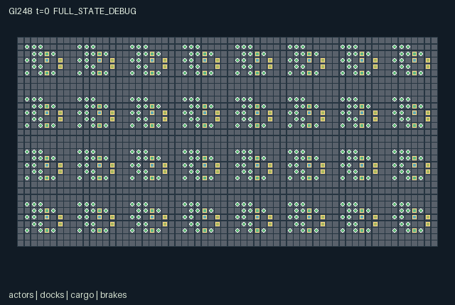

GI248 / SPATIAL
Basalt Tide Salvage
Release verification episode
Untrained uniform legal actions. Actual JAX state sampled along the full original episode; full-state debug camera. No human performance or learning claim.

Run this game
crucibles play --game 248
Start Python locally, then open the address printed by the terminal. Installation, multiplayer, takeover and keyboard controls →
Objective, rewards & ending
Exact task contract
{
"objective": "Recover the 64 physical salvage crates before they rust away; building shelter, stable supports and rescue improve the shared routes. Cargo is claimed by its latest collecting crew.",
"natural_termination": "Joint natural completion when every crate has either been delivered to a shelter or lost to rust. Individual actors remain selectable; oxygen-zero actors only wait until rescue or dry recovery.",
"interaction": "Two separate harness operators hold each bridge; pump discharge reaches the adjacent paired crew, whose diversion valve can turn it into charge. Crates, reciprocal tool loans, rescue and persistent supports couple individually controlled people.",
"observation_access": "The exact self fields, finite nearest-entity slots, local map patch and public clock are the only flat observations. Entity slots sort by Manhattan distance then ID; all columns of a hidden slot are -1. Actor rendering also exposes the selected actor through its self block even if crowding removes it from nearest-eight slots. The static map layout is public. Forecast/knowledge leaves are private unless explicitly observed or messaged. Masks expose local contextual affordances. Event rendering must inherit its owning entity visibility and cannot display hidden global vectors. No renderer state is an extra policy observation."
}Declared per-step reward bounds: -16 to 16. Observability: partially_observable.
Rules
- 512 independent people belong to 32 crews; select one actor or submit any joint 512-action vector.
- Two harness users on the exact brake squares hold a bridge for this transition. Three supports make it permanent. High water otherwise prevents entry onto the bridge strip.
- A wrench operator pumps one water unit using one charge. The adjacent paired dock receives it; its valve can divert it into charge.
- Pick up a nearby crate, carry it through real coordinates, then deliver near a shelter. The collecting crew receives salvage credit; rust can destroy submerged crates.
- Quarry with a pick, spend blocks near a bridge or shelter, exchange tools with a consenting neighbor, or rescue an oxygen-zero neighbor.
- Nearby actors and objects are shown through their exact observation masks. Forecasts are learned at a shelter and may be passed to neighbors.
- This gray basalt, ochre timber and blue water scene is an original block survival family. Replay, human play, runtime and learning are unverified.
Original mechanism document (historical status wording retained)
# Basalt Tide Salvage Status: AUTHORED_NOT_EXECUTED. Initial parentless train candidate; feedback_used=0; source_attempt=0; final_test_used=false. Native A/O/U/H = 512/272/16/1024. Source SHA-256: `a3f68f170bfd0a38bc5eff6e983461f9699121fa8b529c19b65d2ad9eb008e1b`. ## Physical world and roles The 64 by 32 world has 32 adjoining 8 by 8 dock districts. District k starts at (8*(k mod 8),8*floor(k/8)). Relative locations are shelter (1,1), quarry (1,5), pump (3,4), brake stands (4,2)/(4,5), bridge x=5..7 at y=3, and diversion (5,5). District pairs 0/1,2/3 and so on are physically adjacent. Water affects the wet strip x>=5,y=2..5. All 512 people have individual rows; their 32 crews are reward affiliations, not merged controllers. Broad working squares allow multiple people. Ground crates may share a cell, but every carried crate has exactly one carrier. ## Actions and timing - 0 waits; dry oxygen recovers even during wait. At oxygen zero only wait remains legal until rescue or dry recovery. - 1..4 propose north/east/south/west within bounds. Entry onto a wet bridge strip at water>1 needs both current brake holds or three supports. A legal movement intent can therefore be blocked by another actor releasing a brake this tick. - 5 requires tool 0 within distance one of a quarry and fewer than three blocks. 6 spends a block near an unfinished bridge support site (6,3) or unbuilt shelter (1,1). Simultaneous builders may spend redundant material at the cap; no refund is invented. - 7 requires tool 1 near a pump, positive water and charge. At most one unit is pumped per dock per tick; multiple operators each still pay effort. 8 toggles a nearby diversion; an even number of toggles cancels. - 9 requires tool 2 exactly on a brake stand. Both separate stands must be held each tick. 10 targets the lowest-index eligible adjacent ground crate; the smallest actor ID wins a contested claim. The collecting crew becomes owner. 11 drops a carried crate at the actual actor position. - 12 is a reciprocal adjacent tool-swap offer. 13 rescues a nearby oxygen-zero person; the smallest-ID successful helper gets credit. 14 delivers near a shelter location even before its shelter is built; construction is a separate comfort milestone. - 15 transmits cached tide knowledge to adjacent people. Near-shelter access updates private knowledge with the district next surge, which can become stale elsewhere. Masks read the pre-step state. Brake holds and supports resolve before movement. Pumps and diversion valves then change water, with a one-unit ebb each sixteenth tick and stored forecast surge each thirty-second tick. The next forecast is drawn only from the supplied key. Crate claims, drops and deliveries use real positions. A submerged crate gains rust each eighth tick and is lost at rust eight; delivery wins a simultaneous rust loss. Tool exchange, rescue, oxygen and local knowledge then update. A current actor event code is 0..15 for the accepted action, 16 for completed tool swap, or 17 for the credited rescuer; it is not a generic success indicator. ## Rewards and completion Actor i receives -0.005 per accepted non-wait action and -0.01 if submerged after the water update. Every member of its 16-person crew receives +0.125 per crate delivered for that crew, -0.125 per crate lost for that crew, and +0.05 for that crew first shelter. The successful selected rescuer receives +0.2; the rescued person receives +0.1. Every one of the 512 actors receives +0.001 per bridge first reaching three supports. Conservative per-step returned bounds are [-16,16], based on at most 64 crates and 32 bridges, not an experimental success threshold. Natural joint completion occurs when every crate is delivered or rust-lost. Oxygen-zero people remain actual actors and can recover. The horizon is 1024. ## Dependence and strategies A coalition can hold two brakes and salvage before the next surge, or quarry permanent supports to free future operators. Pumping protects a local hauler while imposing discharge on a neighbor; that neighbor can divert it for charge, accept it, or decline. Claiming an abandoned crate changes crew ownership. Rescue and tool loans can create temporary cooperation across rival crews. These are source-level incentive hypotheses; no equilibrium, learning or human fun has been established. ## Interface, boundaries and completion The native boundary is reset(key), raw_step(key,state,actions), observe(state), and legal_actions(state). State is a fixed-key dictionary of fixed-shape int32/bool arrays. Observation and reward are float32. Every role has an action, observation, reward and done row. All out-of-range or masked actions deterministically become wait. A legal intention may still lose a simultaneous contest. Entity caps are fixed; no hidden controllers, callbacks, file access or global cache exists. A nonterminal raw call advances t exactly once. Natural completion has priority when it coincides with H. `truncated=(t>=H)&~terminated`, `done_all=terminated|truncated`, and every individual done equals joint done. Already-terminal input is absorbing: preserve state, observation, clock and cause; return zero rewards and all dones true. Raw auto-reset never occurs. Event flags describe the last actual transition and remain unchanged under absorbing calls; a renderer must not replay them as new events. ## Exact observation and presentation contract The exact self fields, finite nearest-entity slots, local map patch and public clock are the only flat observations. Entity slots sort by Manhattan distance then ID; all columns of a hidden slot are -1. Actor rendering also exposes the selected actor through its self block even if crowding removes it from nearest-eight slots. The static map layout is public. Forecast/knowledge leaves are private unless explicitly observed or messaged. Masks expose local contextual affordances. Event rendering must inherit its owning entity visibility and cannot display hidden global vectors. No renderer state is an extra policy observation. Every non-padding column has its own exact slice and meaning in `manifest.json:observation_fields`. Entity slots encode `[visible, entity_id, absolute_x, absolute_y, declared attributes...]`; a hidden slot is entirely -1. Sorting is ascending Manhattan distance, then entity ID. No value is normalized. Observations are float32 and conservatively bounded [-1,2048]. Explicit padding is zero. Each group visibility mask equals the selected local slots; actor masks additionally include the selected self, whose full attributes are in its self block. - self: [0, 12] end-exclusive; id, crew, tool, x, y, oxygen, blocks, carry, knowledge, warning, event, rescued. - actors: [12, 108] end-exclusive; visible, entity_id, x, y, crew, tool, oxygen, blocks, carry, warning, event, rescued. - docks: [108, 160] end-exclusive; visible, entity_id, x, y, water, support, shelter, valve, charge, bridge, delivered, pumped, flood_loss. - cargo: [160, 188] end-exclusive; visible, entity_id, x, y, carrier, owner, rust. - brakes: [188, 208] end-exclusive; visible, entity_id, x, y, held. - map_patch: [208, 233] end-exclusive; 5x5 row-major dy=-2..2, dx=-2..2. The scene is safe declarative data with exact source and manifest hashes. Actual state coordinates, active masks, local visibility, resource levels, carried items and events determine drawing. Private forecasts are not exposed by a global scene HUD. Event vectors inherit their owning entity mask; full-state debugging is a separate labeled view. Static map layout is public. No narrative text substitutes for a transition. Every individual ID and affiliation is listed in the manifest. ## Human control and unexecuted scripts A presentation layer should distinguish Enter game from Watch replay, offer native legal actions and pause/step, focus any actor/affiliation, and stage an arbitrary joint-action vector. A human can control one or many native rows; human participant count is not the role count. Human and policy decisions must call the same raw kernel. These files are interface metadata, not a claim that a browser UI, native animation or human session has been run. - `held_bridge_salvage`: 8 literal joint vectors. Actors 0 and 1 hold their brakes while actor 3 claims crate 0, walks to dry shelter access and delivers it. - `divert_flow_and_build_shelter`: 5 literal joint vectors. Actor 2 pumps twice; adjacent crew actor 23 diverts incoming flow; actor 4 quarries and builds shelter. - Paired `release_one_distant_brake`: 1 shared prefix vectors; 2 per suffix; exactly one scalar action differs. Keeping both brakes should permit actor 3 bridge entry at initial water 2; releasing actor 0 should block the same westward attempt. Compare actual coordinates, observation and bridge state; unexecuted. The scripts are source-reasoned hypotheses, not runtime legality receipts, success trajectories, solvability certificates or effect estimates. Identical reset and step keys are required for paired replay. ## Literal source evidence - `candidate.py:33`: `def reset(self, key):`; definition ends at line 70. - `candidate.py:78`: `def legal_actions(self, s):`; definition ends at line 95. - `candidate.py:97`: `def advance(self, key, s, actions):`; definition ends at line 185. - `candidate.py:187`: `def raw_step(self, key, state, actions):`; definition ends at line 190. - `candidate.py:198`: `def observe(self, s):`; definition ends at line 210. - `candidate.py:104`: `# HOLD precedes movement: both distant brakes are needed every tick.`. - `candidate.py:118`: `# A pump spends local charge and pushes actual water into the paired adjacent dock.`. - `candidate.py:128`: `# Cargo arbitration uses the smallest actor ID; one physical crate per carrier.`. - `candidate.py:148`: `# Reciprocal neighboring lenders swap tools; rescue pays the helper and recipient.`. - `candidate.py:173`: `reward = -0.005 * (a != 0) - 0.01 * submerged + 0.125 * gains[s['crew']] - 0.125 * losses[s['crew']] + 0.05 * shelter_new[s['crew']] + 0.2 * helper_paid + 0.1 * rescued`. ## Provenance, adaptations and limits `author_input_freeze.json` records all 25 actual allowed input files with absolute path, relative name, byte length, SHA-256 and use. Tool output could be excerpted; the freeze does not claim unseen content was semantically read. Only current 248-251 request/design and population/family251 control. Removed historical194 was not searched. No earlier candidate, result, heldout, memory or other coordination input was used. The batch contains only four already reserved IDs within the user cumulative 300-game ceiling. The supplied JaxMARL README informed parallel per-agent adapter expectations, including observation/action/reward/done dictionaries and `__all__`. This author supplies the native flat kernel; an external adapter is neither fabricated nor a change to the frozen learner. Pgx informed explicit masks and functional game-state presentation. Craftax informed the broad material/world-modification category. PureJaxRL and the supplied Craftax_Baselines PPO-RNN source were read only as integration/training context, not new game libraries, replacement learners or evidence of these games performance. No upstream code or commercial assets were copied. The four visual families remain independent. Representation adaptations: small integers are losslessly int32; refresh explicitly normalizes integer leaves even if a later process enables JAX x64; bool leaves remain bool; observations/rewards explicitly cast float32; the supplied uint32 key is not duplicated in state. Static Python loops only traverse fixed field-name tuples. Intended JIT/vmap/scan compatibility requires later sealed execution. No candidate/JAX/NumPy/PRNG, policy, training, throughput, browser or human-play execution occurred. Native/R0 acceptance, parity, resource use, deterministic replay, paired causal outcomes, rendered animation, solvability, strategic richness, learning and transfer remain UNKNOWN. Human-playability score is unmeasured. Negative, zero, failed and inconclusive outcomes must be preserved. This author produces no runtime/resource/release/native/PID/human receipt. After the final seven SHA-256 hashes are reported, this attempt is frozen; repairs require a separate dispatch.
Commands
Roles & abilities
agent_0 crew 0: harness operator; independently controllable
agent_1 crew 0: harness operator; independently controllable
agent_2 crew 0: pump operator; independently controllable
agent_3 crew 0: signal worker; independently controllable
agent_4 crew 0: pick worker; independently controllable
agent_5 crew 0: pump operator; independently controllable
agent_6 crew 0: harness operator; independently controllable
agent_7 crew 0: signal worker; independently controllable
agent_8 crew 0: pick worker; independently controllable
agent_9 crew 0: pump operator; independently controllable
agent_10 crew 0: harness operator; independently controllable
agent_11 crew 0: signal worker; independently controllable
agent_12 crew 0: pick worker; independently controllable
agent_13 crew 0: pump operator; independently controllable
agent_14 crew 0: harness operator; independently controllable
agent_15 crew 0: signal worker; independently controllable
agent_16 crew 1: harness operator; independently controllable
agent_17 crew 1: harness operator; independently controllable
agent_18 crew 1: pump operator; independently controllable
agent_19 crew 1: signal worker; independently controllable
agent_20 crew 1: pick worker; independently controllable
agent_21 crew 1: pump operator; independently controllable
agent_22 crew 1: harness operator; independently controllable
agent_23 crew 1: signal worker; independently controllable
agent_24 crew 1: pick worker; independently controllable
agent_25 crew 1: pump operator; independently controllable
agent_26 crew 1: harness operator; independently controllable
agent_27 crew 1: signal worker; independently controllable
agent_28 crew 1: pick worker; independently controllable
agent_29 crew 1: pump operator; independently controllable
agent_30 crew 1: harness operator; independently controllable
agent_31 crew 1: signal worker; independently controllable
agent_32 crew 2: harness operator; independently controllable
agent_33 crew 2: harness operator; independently controllable
agent_34 crew 2: pump operator; independently controllable
agent_35 crew 2: signal worker; independently controllable
agent_36 crew 2: pick worker; independently controllable
agent_37 crew 2: pump operator; independently controllable
agent_38 crew 2: harness operator; independently controllable
agent_39 crew 2: signal worker; independently controllable
agent_40 crew 2: pick worker; independently controllable
agent_41 crew 2: pump operator; independently controllable
agent_42 crew 2: harness operator; independently controllable
agent_43 crew 2: signal worker; independently controllable
agent_44 crew 2: pick worker; independently controllable
agent_45 crew 2: pump operator; independently controllable
agent_46 crew 2: harness operator; independently controllable
agent_47 crew 2: signal worker; independently controllable
agent_48 crew 3: harness operator; independently controllable
agent_49 crew 3: harness operator; independently controllable
agent_50 crew 3: pump operator; independently controllable
agent_51 crew 3: signal worker; independently controllable
agent_52 crew 3: pick worker; independently controllable
agent_53 crew 3: pump operator; independently controllable
agent_54 crew 3: harness operator; independently controllable
agent_55 crew 3: signal worker; independently controllable
agent_56 crew 3: pick worker; independently controllable
agent_57 crew 3: pump operator; independently controllable
agent_58 crew 3: harness operator; independently controllable
agent_59 crew 3: signal worker; independently controllable
agent_60 crew 3: pick worker; independently controllable
agent_61 crew 3: pump operator; independently controllable
agent_62 crew 3: harness operator; independently controllable
agent_63 crew 3: signal worker; independently controllable
agent_64 crew 4: harness operator; independently controllable
agent_65 crew 4: harness operator; independently controllable
agent_66 crew 4: pump operator; independently controllable
agent_67 crew 4: signal worker; independently controllable
agent_68 crew 4: pick worker; independently controllable
agent_69 crew 4: pump operator; independently controllable
agent_70 crew 4: harness operator; independently controllable
agent_71 crew 4: signal worker; independently controllable
agent_72 crew 4: pick worker; independently controllable
agent_73 crew 4: pump operator; independently controllable
agent_74 crew 4: harness operator; independently controllable
agent_75 crew 4: signal worker; independently controllable
agent_76 crew 4: pick worker; independently controllable
agent_77 crew 4: pump operator; independently controllable
agent_78 crew 4: harness operator; independently controllable
agent_79 crew 4: signal worker; independently controllable
agent_80 crew 5: harness operator; independently controllable
agent_81 crew 5: harness operator; independently controllable
agent_82 crew 5: pump operator; independently controllable
agent_83 crew 5: signal worker; independently controllable
agent_84 crew 5: pick worker; independently controllable
agent_85 crew 5: pump operator; independently controllable
agent_86 crew 5: harness operator; independently controllable
agent_87 crew 5: signal worker; independently controllable
agent_88 crew 5: pick worker; independently controllable
agent_89 crew 5: pump operator; independently controllable
agent_90 crew 5: harness operator; independently controllable
agent_91 crew 5: signal worker; independently controllable
agent_92 crew 5: pick worker; independently controllable
agent_93 crew 5: pump operator; independently controllable
agent_94 crew 5: harness operator; independently controllable
agent_95 crew 5: signal worker; independently controllable
agent_96 crew 6: harness operator; independently controllable
agent_97 crew 6: harness operator; independently controllable
agent_98 crew 6: pump operator; independently controllable
agent_99 crew 6: signal worker; independently controllable
agent_100 crew 6: pick worker; independently controllable
agent_101 crew 6: pump operator; independently controllable
agent_102 crew 6: harness operator; independently controllable
agent_103 crew 6: signal worker; independently controllable
agent_104 crew 6: pick worker; independently controllable
agent_105 crew 6: pump operator; independently controllable
agent_106 crew 6: harness operator; independently controllable
agent_107 crew 6: signal worker; independently controllable
agent_108 crew 6: pick worker; independently controllable
agent_109 crew 6: pump operator; independently controllable
agent_110 crew 6: harness operator; independently controllable
agent_111 crew 6: signal worker; independently controllable
agent_112 crew 7: harness operator; independently controllable
agent_113 crew 7: harness operator; independently controllable
agent_114 crew 7: pump operator; independently controllable
agent_115 crew 7: signal worker; independently controllable
agent_116 crew 7: pick worker; independently controllable
agent_117 crew 7: pump operator; independently controllable
agent_118 crew 7: harness operator; independently controllable
agent_119 crew 7: signal worker; independently controllable
agent_120 crew 7: pick worker; independently controllable
agent_121 crew 7: pump operator; independently controllable
agent_122 crew 7: harness operator; independently controllable
agent_123 crew 7: signal worker; independently controllable
agent_124 crew 7: pick worker; independently controllable
agent_125 crew 7: pump operator; independently controllable
agent_126 crew 7: harness operator; independently controllable
agent_127 crew 7: signal worker; independently controllable
agent_128 crew 8: harness operator; independently controllable
agent_129 crew 8: harness operator; independently controllable
agent_130 crew 8: pump operator; independently controllable
agent_131 crew 8: signal worker; independently controllable
agent_132 crew 8: pick worker; independently controllable
agent_133 crew 8: pump operator; independently controllable
agent_134 crew 8: harness operator; independently controllable
agent_135 crew 8: signal worker; independently controllable
agent_136 crew 8: pick worker; independently controllable
agent_137 crew 8: pump operator; independently controllable
agent_138 crew 8: harness operator; independently controllable
agent_139 crew 8: signal worker; independently controllable
agent_140 crew 8: pick worker; independently controllable
agent_141 crew 8: pump operator; independently controllable
agent_142 crew 8: harness operator; independently controllable
agent_143 crew 8: signal worker; independently controllable
agent_144 crew 9: harness operator; independently controllable
agent_145 crew 9: harness operator; independently controllable
agent_146 crew 9: pump operator; independently controllable
agent_147 crew 9: signal worker; independently controllable
agent_148 crew 9: pick worker; independently controllable
agent_149 crew 9: pump operator; independently controllable
agent_150 crew 9: harness operator; independently controllable
agent_151 crew 9: signal worker; independently controllable
agent_152 crew 9: pick worker; independently controllable
agent_153 crew 9: pump operator; independently controllable
agent_154 crew 9: harness operator; independently controllable
agent_155 crew 9: signal worker; independently controllable
agent_156 crew 9: pick worker; independently controllable
agent_157 crew 9: pump operator; independently controllable
agent_158 crew 9: harness operator; independently controllable
agent_159 crew 9: signal worker; independently controllable
agent_160 crew 10: harness operator; independently controllable
agent_161 crew 10: harness operator; independently controllable
agent_162 crew 10: pump operator; independently controllable
agent_163 crew 10: signal worker; independently controllable
agent_164 crew 10: pick worker; independently controllable
agent_165 crew 10: pump operator; independently controllable
agent_166 crew 10: harness operator; independently controllable
agent_167 crew 10: signal worker; independently controllable
agent_168 crew 10: pick worker; independently controllable
agent_169 crew 10: pump operator; independently controllable
agent_170 crew 10: harness operator; independently controllable
agent_171 crew 10: signal worker; independently controllable
agent_172 crew 10: pick worker; independently controllable
agent_173 crew 10: pump operator; independently controllable
agent_174 crew 10: harness operator; independently controllable
agent_175 crew 10: signal worker; independently controllable
agent_176 crew 11: harness operator; independently controllable
agent_177 crew 11: harness operator; independently controllable
agent_178 crew 11: pump operator; independently controllable
agent_179 crew 11: signal worker; independently controllable
agent_180 crew 11: pick worker; independently controllable
agent_181 crew 11: pump operator; independently controllable
agent_182 crew 11: harness operator; independently controllable
agent_183 crew 11: signal worker; independently controllable
agent_184 crew 11: pick worker; independently controllable
agent_185 crew 11: pump operator; independently controllable
agent_186 crew 11: harness operator; independently controllable
agent_187 crew 11: signal worker; independently controllable
agent_188 crew 11: pick worker; independently controllable
agent_189 crew 11: pump operator; independently controllable
agent_190 crew 11: harness operator; independently controllable
agent_191 crew 11: signal worker; independently controllable
agent_192 crew 12: harness operator; independently controllable
agent_193 crew 12: harness operator; independently controllable
agent_194 crew 12: pump operator; independently controllable
agent_195 crew 12: signal worker; independently controllable
agent_196 crew 12: pick worker; independently controllable
agent_197 crew 12: pump operator; independently controllable
agent_198 crew 12: harness operator; independently controllable
agent_199 crew 12: signal worker; independently controllable
agent_200 crew 12: pick worker; independently controllable
agent_201 crew 12: pump operator; independently controllable
agent_202 crew 12: harness operator; independently controllable
agent_203 crew 12: signal worker; independently controllable
agent_204 crew 12: pick worker; independently controllable
agent_205 crew 12: pump operator; independently controllable
agent_206 crew 12: harness operator; independently controllable
agent_207 crew 12: signal worker; independently controllable
agent_208 crew 13: harness operator; independently controllable
agent_209 crew 13: harness operator; independently controllable
agent_210 crew 13: pump operator; independently controllable
agent_211 crew 13: signal worker; independently controllable
agent_212 crew 13: pick worker; independently controllable
agent_213 crew 13: pump operator; independently controllable
agent_214 crew 13: harness operator; independently controllable
agent_215 crew 13: signal worker; independently controllable
agent_216 crew 13: pick worker; independently controllable
agent_217 crew 13: pump operator; independently controllable
agent_218 crew 13: harness operator; independently controllable
agent_219 crew 13: signal worker; independently controllable
agent_220 crew 13: pick worker; independently controllable
agent_221 crew 13: pump operator; independently controllable
agent_222 crew 13: harness operator; independently controllable
agent_223 crew 13: signal worker; independently controllable
agent_224 crew 14: harness operator; independently controllable
agent_225 crew 14: harness operator; independently controllable
agent_226 crew 14: pump operator; independently controllable
agent_227 crew 14: signal worker; independently controllable
agent_228 crew 14: pick worker; independently controllable
agent_229 crew 14: pump operator; independently controllable
agent_230 crew 14: harness operator; independently controllable
agent_231 crew 14: signal worker; independently controllable
agent_232 crew 14: pick worker; independently controllable
agent_233 crew 14: pump operator; independently controllable
agent_234 crew 14: harness operator; independently controllable
agent_235 crew 14: signal worker; independently controllable
agent_236 crew 14: pick worker; independently controllable
agent_237 crew 14: pump operator; independently controllable
agent_238 crew 14: harness operator; independently controllable
agent_239 crew 14: signal worker; independently controllable
agent_240 crew 15: harness operator; independently controllable
agent_241 crew 15: harness operator; independently controllable
agent_242 crew 15: pump operator; independently controllable
agent_243 crew 15: signal worker; independently controllable
agent_244 crew 15: pick worker; independently controllable
agent_245 crew 15: pump operator; independently controllable
agent_246 crew 15: harness operator; independently controllable
agent_247 crew 15: signal worker; independently controllable
agent_248 crew 15: pick worker; independently controllable
agent_249 crew 15: pump operator; independently controllable
agent_250 crew 15: harness operator; independently controllable
agent_251 crew 15: signal worker; independently controllable
agent_252 crew 15: pick worker; independently controllable
agent_253 crew 15: pump operator; independently controllable
agent_254 crew 15: harness operator; independently controllable
agent_255 crew 15: signal worker; independently controllable
agent_256 crew 16: harness operator; independently controllable
agent_257 crew 16: harness operator; independently controllable
agent_258 crew 16: pump operator; independently controllable
agent_259 crew 16: signal worker; independently controllable
agent_260 crew 16: pick worker; independently controllable
agent_261 crew 16: pump operator; independently controllable
agent_262 crew 16: harness operator; independently controllable
agent_263 crew 16: signal worker; independently controllable
agent_264 crew 16: pick worker; independently controllable
agent_265 crew 16: pump operator; independently controllable
agent_266 crew 16: harness operator; independently controllable
agent_267 crew 16: signal worker; independently controllable
agent_268 crew 16: pick worker; independently controllable
agent_269 crew 16: pump operator; independently controllable
agent_270 crew 16: harness operator; independently controllable
agent_271 crew 16: signal worker; independently controllable
agent_272 crew 17: harness operator; independently controllable
agent_273 crew 17: harness operator; independently controllable
agent_274 crew 17: pump operator; independently controllable
agent_275 crew 17: signal worker; independently controllable
agent_276 crew 17: pick worker; independently controllable
agent_277 crew 17: pump operator; independently controllable
agent_278 crew 17: harness operator; independently controllable
agent_279 crew 17: signal worker; independently controllable
agent_280 crew 17: pick worker; independently controllable
agent_281 crew 17: pump operator; independently controllable
agent_282 crew 17: harness operator; independently controllable
agent_283 crew 17: signal worker; independently controllable
agent_284 crew 17: pick worker; independently controllable
agent_285 crew 17: pump operator; independently controllable
agent_286 crew 17: harness operator; independently controllable
agent_287 crew 17: signal worker; independently controllable
agent_288 crew 18: harness operator; independently controllable
agent_289 crew 18: harness operator; independently controllable
agent_290 crew 18: pump operator; independently controllable
agent_291 crew 18: signal worker; independently controllable
agent_292 crew 18: pick worker; independently controllable
agent_293 crew 18: pump operator; independently controllable
agent_294 crew 18: harness operator; independently controllable
agent_295 crew 18: signal worker; independently controllable
agent_296 crew 18: pick worker; independently controllable
agent_297 crew 18: pump operator; independently controllable
agent_298 crew 18: harness operator; independently controllable
agent_299 crew 18: signal worker; independently controllable
agent_300 crew 18: pick worker; independently controllable
agent_301 crew 18: pump operator; independently controllable
agent_302 crew 18: harness operator; independently controllable
agent_303 crew 18: signal worker; independently controllable
agent_304 crew 19: harness operator; independently controllable
agent_305 crew 19: harness operator; independently controllable
agent_306 crew 19: pump operator; independently controllable
agent_307 crew 19: signal worker; independently controllable
agent_308 crew 19: pick worker; independently controllable
agent_309 crew 19: pump operator; independently controllable
agent_310 crew 19: harness operator; independently controllable
agent_311 crew 19: signal worker; independently controllable
agent_312 crew 19: pick worker; independently controllable
agent_313 crew 19: pump operator; independently controllable
agent_314 crew 19: harness operator; independently controllable
agent_315 crew 19: signal worker; independently controllable
agent_316 crew 19: pick worker; independently controllable
agent_317 crew 19: pump operator; independently controllable
agent_318 crew 19: harness operator; independently controllable
agent_319 crew 19: signal worker; independently controllable
agent_320 crew 20: harness operator; independently controllable
agent_321 crew 20: harness operator; independently controllable
agent_322 crew 20: pump operator; independently controllable
agent_323 crew 20: signal worker; independently controllable
agent_324 crew 20: pick worker; independently controllable
agent_325 crew 20: pump operator; independently controllable
agent_326 crew 20: harness operator; independently controllable
agent_327 crew 20: signal worker; independently controllable
agent_328 crew 20: pick worker; independently controllable
agent_329 crew 20: pump operator; independently controllable
agent_330 crew 20: harness operator; independently controllable
agent_331 crew 20: signal worker; independently controllable
agent_332 crew 20: pick worker; independently controllable
agent_333 crew 20: pump operator; independently controllable
agent_334 crew 20: harness operator; independently controllable
agent_335 crew 20: signal worker; independently controllable
agent_336 crew 21: harness operator; independently controllable
agent_337 crew 21: harness operator; independently controllable
agent_338 crew 21: pump operator; independently controllable
agent_339 crew 21: signal worker; independently controllable
agent_340 crew 21: pick worker; independently controllable
agent_341 crew 21: pump operator; independently controllable
agent_342 crew 21: harness operator; independently controllable
agent_343 crew 21: signal worker; independently controllable
agent_344 crew 21: pick worker; independently controllable
agent_345 crew 21: pump operator; independently controllable
agent_346 crew 21: harness operator; independently controllable
agent_347 crew 21: signal worker; independently controllable
agent_348 crew 21: pick worker; independently controllable
agent_349 crew 21: pump operator; independently controllable
agent_350 crew 21: harness operator; independently controllable
agent_351 crew 21: signal worker; independently controllable
agent_352 crew 22: harness operator; independently controllable
agent_353 crew 22: harness operator; independently controllable
agent_354 crew 22: pump operator; independently controllable
agent_355 crew 22: signal worker; independently controllable
agent_356 crew 22: pick worker; independently controllable
agent_357 crew 22: pump operator; independently controllable
agent_358 crew 22: harness operator; independently controllable
agent_359 crew 22: signal worker; independently controllable
agent_360 crew 22: pick worker; independently controllable
agent_361 crew 22: pump operator; independently controllable
agent_362 crew 22: harness operator; independently controllable
agent_363 crew 22: signal worker; independently controllable
agent_364 crew 22: pick worker; independently controllable
agent_365 crew 22: pump operator; independently controllable
agent_366 crew 22: harness operator; independently controllable
agent_367 crew 22: signal worker; independently controllable
agent_368 crew 23: harness operator; independently controllable
agent_369 crew 23: harness operator; independently controllable
agent_370 crew 23: pump operator; independently controllable
agent_371 crew 23: signal worker; independently controllable
agent_372 crew 23: pick worker; independently controllable
agent_373 crew 23: pump operator; independently controllable
agent_374 crew 23: harness operator; independently controllable
agent_375 crew 23: signal worker; independently controllable
agent_376 crew 23: pick worker; independently controllable
agent_377 crew 23: pump operator; independently controllable
agent_378 crew 23: harness operator; independently controllable
agent_379 crew 23: signal worker; independently controllable
agent_380 crew 23: pick worker; independently controllable
agent_381 crew 23: pump operator; independently controllable
agent_382 crew 23: harness operator; independently controllable
agent_383 crew 23: signal worker; independently controllable
agent_384 crew 24: harness operator; independently controllable
agent_385 crew 24: harness operator; independently controllable
agent_386 crew 24: pump operator; independently controllable
agent_387 crew 24: signal worker; independently controllable
agent_388 crew 24: pick worker; independently controllable
agent_389 crew 24: pump operator; independently controllable
agent_390 crew 24: harness operator; independently controllable
agent_391 crew 24: signal worker; independently controllable
agent_392 crew 24: pick worker; independently controllable
agent_393 crew 24: pump operator; independently controllable
agent_394 crew 24: harness operator; independently controllable
agent_395 crew 24: signal worker; independently controllable
agent_396 crew 24: pick worker; independently controllable
agent_397 crew 24: pump operator; independently controllable
agent_398 crew 24: harness operator; independently controllable
agent_399 crew 24: signal worker; independently controllable
agent_400 crew 25: harness operator; independently controllable
agent_401 crew 25: harness operator; independently controllable
agent_402 crew 25: pump operator; independently controllable
agent_403 crew 25: signal worker; independently controllable
agent_404 crew 25: pick worker; independently controllable
agent_405 crew 25: pump operator; independently controllable
agent_406 crew 25: harness operator; independently controllable
agent_407 crew 25: signal worker; independently controllable
agent_408 crew 25: pick worker; independently controllable
agent_409 crew 25: pump operator; independently controllable
agent_410 crew 25: harness operator; independently controllable
agent_411 crew 25: signal worker; independently controllable
agent_412 crew 25: pick worker; independently controllable
agent_413 crew 25: pump operator; independently controllable
agent_414 crew 25: harness operator; independently controllable
agent_415 crew 25: signal worker; independently controllable
agent_416 crew 26: harness operator; independently controllable
agent_417 crew 26: harness operator; independently controllable
agent_418 crew 26: pump operator; independently controllable
agent_419 crew 26: signal worker; independently controllable
agent_420 crew 26: pick worker; independently controllable
agent_421 crew 26: pump operator; independently controllable
agent_422 crew 26: harness operator; independently controllable
agent_423 crew 26: signal worker; independently controllable
agent_424 crew 26: pick worker; independently controllable
agent_425 crew 26: pump operator; independently controllable
agent_426 crew 26: harness operator; independently controllable
agent_427 crew 26: signal worker; independently controllable
agent_428 crew 26: pick worker; independently controllable
agent_429 crew 26: pump operator; independently controllable
agent_430 crew 26: harness operator; independently controllable
agent_431 crew 26: signal worker; independently controllable
agent_432 crew 27: harness operator; independently controllable
agent_433 crew 27: harness operator; independently controllable
agent_434 crew 27: pump operator; independently controllable
agent_435 crew 27: signal worker; independently controllable
agent_436 crew 27: pick worker; independently controllable
agent_437 crew 27: pump operator; independently controllable
agent_438 crew 27: harness operator; independently controllable
agent_439 crew 27: signal worker; independently controllable
agent_440 crew 27: pick worker; independently controllable
agent_441 crew 27: pump operator; independently controllable
agent_442 crew 27: harness operator; independently controllable
agent_443 crew 27: signal worker; independently controllable
agent_444 crew 27: pick worker; independently controllable
agent_445 crew 27: pump operator; independently controllable
agent_446 crew 27: harness operator; independently controllable
agent_447 crew 27: signal worker; independently controllable
agent_448 crew 28: harness operator; independently controllable
agent_449 crew 28: harness operator; independently controllable
agent_450 crew 28: pump operator; independently controllable
agent_451 crew 28: signal worker; independently controllable
agent_452 crew 28: pick worker; independently controllable
agent_453 crew 28: pump operator; independently controllable
agent_454 crew 28: harness operator; independently controllable
agent_455 crew 28: signal worker; independently controllable
agent_456 crew 28: pick worker; independently controllable
agent_457 crew 28: pump operator; independently controllable
agent_458 crew 28: harness operator; independently controllable
agent_459 crew 28: signal worker; independently controllable
agent_460 crew 28: pick worker; independently controllable
agent_461 crew 28: pump operator; independently controllable
agent_462 crew 28: harness operator; independently controllable
agent_463 crew 28: signal worker; independently controllable
agent_464 crew 29: harness operator; independently controllable
agent_465 crew 29: harness operator; independently controllable
agent_466 crew 29: pump operator; independently controllable
agent_467 crew 29: signal worker; independently controllable
agent_468 crew 29: pick worker; independently controllable
agent_469 crew 29: pump operator; independently controllable
agent_470 crew 29: harness operator; independently controllable
agent_471 crew 29: signal worker; independently controllable
agent_472 crew 29: pick worker; independently controllable
agent_473 crew 29: pump operator; independently controllable
agent_474 crew 29: harness operator; independently controllable
agent_475 crew 29: signal worker; independently controllable
agent_476 crew 29: pick worker; independently controllable
agent_477 crew 29: pump operator; independently controllable
agent_478 crew 29: harness operator; independently controllable
agent_479 crew 29: signal worker; independently controllable
agent_480 crew 30: harness operator; independently controllable
agent_481 crew 30: harness operator; independently controllable
agent_482 crew 30: pump operator; independently controllable
agent_483 crew 30: signal worker; independently controllable
agent_484 crew 30: pick worker; independently controllable
agent_485 crew 30: pump operator; independently controllable
agent_486 crew 30: harness operator; independently controllable
agent_487 crew 30: signal worker; independently controllable
agent_488 crew 30: pick worker; independently controllable
agent_489 crew 30: pump operator; independently controllable
agent_490 crew 30: harness operator; independently controllable
agent_491 crew 30: signal worker; independently controllable
agent_492 crew 30: pick worker; independently controllable
agent_493 crew 30: pump operator; independently controllable
agent_494 crew 30: harness operator; independently controllable
agent_495 crew 30: signal worker; independently controllable
agent_496 crew 31: harness operator; independently controllable
agent_497 crew 31: harness operator; independently controllable
agent_498 crew 31: pump operator; independently controllable
agent_499 crew 31: signal worker; independently controllable
agent_500 crew 31: pick worker; independently controllable
agent_501 crew 31: pump operator; independently controllable
agent_502 crew 31: harness operator; independently controllable
agent_503 crew 31: signal worker; independently controllable
agent_504 crew 31: pick worker; independently controllable
agent_505 crew 31: pump operator; independently controllable
agent_506 crew 31: harness operator; independently controllable
agent_507 crew 31: signal worker; independently controllable
agent_508 crew 31: pick worker; independently controllable
agent_509 crew 31: pump operator; independently controllable
agent_510 crew 31: harness operator; independently controllable
agent_511 crew 31: signal worker; independently controllable
Observation permissions
Training receives only the original observation rows. Role cameras use declared visibility; debug cameras are explicitly marked. Local benchmark records log debug exposure and role takeover history.
Exact observation layout
[
{
"slice": [
0,
1
],
"name": "self.id",
"meaning": "native zero-based actor ID",
"visibility": "self"
},
{
"slice": [
1,
2
],
"name": "self.crew",
"meaning": "crew index 0..31",
"visibility": "self"
},
{
"slice": [
2,
3
],
"name": "self.tool",
"meaning": "Tool: 0 pick,1 pump wrench,2 harness,3 signal flag",
"visibility": "self"
},
{
"slice": [
3,
4
],
"name": "self.x",
"meaning": "absolute grid x coordinate",
"visibility": "self"
},
{
"slice": [
4,
5
],
"name": "self.y",
"meaning": "absolute grid y coordinate",
"visibility": "self"
},
{
"slice": [
5,
6
],
"name": "self.oxygen",
"meaning": "oxygen 0..12; zero disables all non-wait actions",
"visibility": "self"
},
{
"slice": [
6,
7
],
"name": "self.blocks",
"meaning": "carried basalt blocks 0..3",
"visibility": "self"
},
{
"slice": [
7,
8
],
"name": "self.carry",
"meaning": "carried crate ID or -1",
"visibility": "self"
},
{
"slice": [
8,
9
],
"name": "self.knowledge",
"meaning": "private cached forecast/recipe; may be stale",
"visibility": "self"
},
{
"slice": [
9,
10
],
"name": "self.warning",
"meaning": "current tide message: 0 silent, 1..3 encodes forecast 0..2",
"visibility": "self"
},
{
"slice": [
10,
11
],
"name": "self.event",
"meaning": "accepted action code for the last actual transition; not a success flag In this game 16 marks completed tool swap and 17 the credited rescuer.",
"visibility": "self"
},
{
"slice": [
11,
12
],
"name": "self.rescued",
"meaning": "received a rescue in the last transition",
"visibility": "self"
},
{
"slice": [
12,
13
],
"name": "actors.slot0.visible",
"meaning": "actors, nearest slot 0: 1 for selected visible entity; the entire slot is -1 when hidden. Manhattan radius 5; ascending (distance,entity ID); hidden slot -1.",
"visibility": "local"
},
{
"slice": [
13,
14
],
"name": "actors.slot0.entity_id",
"meaning": "actors, nearest slot 0: zero-based entity ID within this group. Manhattan radius 5; ascending (distance,entity ID); hidden slot -1.",
"visibility": "local"
},
{
"slice": [
14,
15
],
"name": "actors.slot0.x",
"meaning": "actors, nearest slot 0: absolute grid x. Manhattan radius 5; ascending (distance,entity ID); hidden slot -1.",
"visibility": "local"
},
{
"slice": [
15,
16
],
"name": "actors.slot0.y",
"meaning": "actors, nearest slot 0: absolute grid y. Manhattan radius 5; ascending (distance,entity ID); hidden slot -1.",
"visibility": "local"
},
{
"slice": [
16,
17
],
"name": "actors.slot0.crew",
"meaning": "actors, nearest slot 0: crew index 0..31. Manhattan radius 5; ascending (distance,entity ID); hidden slot -1.",
"visibility": "local"
},
{
"slice": [
17,
18
],
"name": "actors.slot0.tool",
"meaning": "actors, nearest slot 0: Tool: 0 pick,1 pump wrench,2 harness,3 signal flag. Manhattan radius 5; ascending (distance,entity ID); hidden slot -1.",
"visibility": "local"
},
{
"slice": [
18,
19
],
"name": "actors.slot0.oxygen",
"meaning": "actors, nearest slot 0: oxygen 0..12; zero disables all non-wait actions. Manhattan radius 5; ascending (distance,entity ID); hidden slot -1.",
"visibility": "local"
},
{
"slice": [
19,
20
],
"name": "actors.slot0.blocks",
"meaning": "actors, nearest slot 0: carried basalt blocks 0..3. Manhattan radius 5; ascending (distance,entity ID); hidden slot -1.",
"visibility": "local"
},
{
"slice": [
20,
21
],
"name": "actors.slot0.carry",
"meaning": "actors, nearest slot 0: carried crate ID or -1. Manhattan radius 5; ascending (distance,entity ID); hidden slot -1.",
"visibility": "local"
},
{
"slice": [
21,
22
],
"name": "actors.slot0.warning",
"meaning": "actors, nearest slot 0: current tide message: 0 silent, 1..3 encodes forecast 0..2. Manhattan radius 5; ascending (distance,entity ID); hidden slot -1.",
"visibility": "local"
},
{
"slice": [
22,
23
],
"name": "actors.slot0.event",
"meaning": "actors, nearest slot 0: accepted action code for the last actual transition; not a success flag. Manhattan radius 5; ascending (distance,entity ID); hidden slot -1. In this game 16 marks completed tool swap and 17 the credited rescuer.",
"visibility": "local"
},
{
"slice": [
23,
24
],
"name": "actors.slot0.rescued",
"meaning": "actors, nearest slot 0: received a rescue in the last transition. Manhattan radius 5; ascending (distance,entity ID); hidden slot -1.",
"visibility": "local"
},
{
"slice": [
24,
25
],
"name": "actors.slot1.visible",
"meaning": "actors, nearest slot 1: 1 for selected visible entity; the entire slot is -1 when hidden. Manhattan radius 5; ascending (distance,entity ID); hidden slot -1.",
"visibility": "local"
},
{
"slice": [
25,
26
],
"name": "actors.slot1.entity_id",
"meaning": "actors, nearest slot 1: zero-based entity ID within this group. Manhattan radius 5; ascending (distance,entity ID); hidden slot -1.",
"visibility": "local"
},
{
"slice": [
26,
27
],
"name": "actors.slot1.x",
"meaning": "actors, nearest slot 1: absolute grid x. Manhattan radius 5; ascending (distance,entity ID); hidden slot -1.",
"visibility": "local"
},
{
"slice": [
27,
28
],
"name": "actors.slot1.y",
"meaning": "actors, nearest slot 1: absolute grid y. Manhattan radius 5; ascending (distance,entity ID); hidden slot -1.",
"visibility": "local"
},
{
"slice": [
28,
29
],
"name": "actors.slot1.crew",
"meaning": "actors, nearest slot 1: crew index 0..31. Manhattan radius 5; ascending (distance,entity ID); hidden slot -1.",
"visibility": "local"
},
{
"slice": [
29,
30
],
"name": "actors.slot1.tool",
"meaning": "actors, nearest slot 1: Tool: 0 pick,1 pump wrench,2 harness,3 signal flag. Manhattan radius 5; ascending (distance,entity ID); hidden slot -1.",
"visibility": "local"
},
{
"slice": [
30,
31
],
"name": "actors.slot1.oxygen",
"meaning": "actors, nearest slot 1: oxygen 0..12; zero disables all non-wait actions. Manhattan radius 5; ascending (distance,entity ID); hidden slot -1.",
"visibility": "local"
},
{
"slice": [
31,
32
],
"name": "actors.slot1.blocks",
"meaning": "actors, nearest slot 1: carried basalt blocks 0..3. Manhattan radius 5; ascending (distance,entity ID); hidden slot -1.",
"visibility": "local"
},
{
"slice": [
32,
33
],
"name": "actors.slot1.carry",
"meaning": "actors, nearest slot 1: carried crate ID or -1. Manhattan radius 5; ascending (distance,entity ID); hidden slot -1.",
"visibility": "local"
},
{
"slice": [
33,
34
],
"name": "actors.slot1.warning",
"meaning": "actors, nearest slot 1: current tide message: 0 silent, 1..3 encodes forecast 0..2. Manhattan radius 5; ascending (distance,entity ID); hidden slot -1.",
"visibility": "local"
},
{
"slice": [
34,
35
],
"name": "actors.slot1.event",
"meaning": "actors, nearest slot 1: accepted action code for the last actual transition; not a success flag. Manhattan radius 5; ascending (distance,entity ID); hidden slot -1. In this game 16 marks completed tool swap and 17 the credited rescuer.",
"visibility": "local"
},
{
"slice": [
35,
36
],
"name": "actors.slot1.rescued",
"meaning": "actors, nearest slot 1: received a rescue in the last transition. Manhattan radius 5; ascending (distance,entity ID); hidden slot -1.",
"visibility": "local"
},
{
"slice": [
36,
37
],
"name": "actors.slot2.visible",
"meaning": "actors, nearest slot 2: 1 for selected visible entity; the entire slot is -1 when hidden. Manhattan radius 5; ascending (distance,entity ID); hidden slot -1.",
"visibility": "local"
},
{
"slice": [
37,
38
],
"name": "actors.slot2.entity_id",
"meaning": "actors, nearest slot 2: zero-based entity ID within this group. Manhattan radius 5; ascending (distance,entity ID); hidden slot -1.",
"visibility": "local"
},
{
"slice": [
38,
39
],
"name": "actors.slot2.x",
"meaning": "actors, nearest slot 2: absolute grid x. Manhattan radius 5; ascending (distance,entity ID); hidden slot -1.",
"visibility": "local"
},
{
"slice": [
39,
40
],
"name": "actors.slot2.y",
"meaning": "actors, nearest slot 2: absolute grid y. Manhattan radius 5; ascending (distance,entity ID); hidden slot -1.",
"visibility": "local"
},
{
"slice": [
40,
41
],
"name": "actors.slot2.crew",
"meaning": "actors, nearest slot 2: crew index 0..31. Manhattan radius 5; ascending (distance,entity ID); hidden slot -1.",
"visibility": "local"
},
{
"slice": [
41,
42
],
"name": "actors.slot2.tool",
"meaning": "actors, nearest slot 2: Tool: 0 pick,1 pump wrench,2 harness,3 signal flag. Manhattan radius 5; ascending (distance,entity ID); hidden slot -1.",
"visibility": "local"
},
{
"slice": [
42,
43
],
"name": "actors.slot2.oxygen",
"meaning": "actors, nearest slot 2: oxygen 0..12; zero disables all non-wait actions. Manhattan radius 5; ascending (distance,entity ID); hidden slot -1.",
"visibility": "local"
},
{
"slice": [
43,
44
],
"name": "actors.slot2.blocks",
"meaning": "actors, nearest slot 2: carried basalt blocks 0..3. Manhattan radius 5; ascending (distance,entity ID); hidden slot -1.",
"visibility": "local"
},
{
"slice": [
44,
45
],
"name": "actors.slot2.carry",
"meaning": "actors, nearest slot 2: carried crate ID or -1. Manhattan radius 5; ascending (distance,entity ID); hidden slot -1.",
"visibility": "local"
},
{
"slice": [
45,
46
],
"name": "actors.slot2.warning",
"meaning": "actors, nearest slot 2: current tide message: 0 silent, 1..3 encodes forecast 0..2. Manhattan radius 5; ascending (distance,entity ID); hidden slot -1.",
"visibility": "local"
},
{
"slice": [
46,
47
],
"name": "actors.slot2.event",
"meaning": "actors, nearest slot 2: accepted action code for the last actual transition; not a success flag. Manhattan radius 5; ascending (distance,entity ID); hidden slot -1. In this game 16 marks completed tool swap and 17 the credited rescuer.",
"visibility": "local"
},
{
"slice": [
47,
48
],
"name": "actors.slot2.rescued",
"meaning": "actors, nearest slot 2: received a rescue in the last transition. Manhattan radius 5; ascending (distance,entity ID); hidden slot -1.",
"visibility": "local"
},
{
"slice": [
48,
49
],
"name": "actors.slot3.visible",
"meaning": "actors, nearest slot 3: 1 for selected visible entity; the entire slot is -1 when hidden. Manhattan radius 5; ascending (distance,entity ID); hidden slot -1.",
"visibility": "local"
},
{
"slice": [
49,
50
],
"name": "actors.slot3.entity_id",
"meaning": "actors, nearest slot 3: zero-based entity ID within this group. Manhattan radius 5; ascending (distance,entity ID); hidden slot -1.",
"visibility": "local"
},
{
"slice": [
50,
51
],
"name": "actors.slot3.x",
"meaning": "actors, nearest slot 3: absolute grid x. Manhattan radius 5; ascending (distance,entity ID); hidden slot -1.",
"visibility": "local"
},
{
"slice": [
51,
52
],
"name": "actors.slot3.y",
"meaning": "actors, nearest slot 3: absolute grid y. Manhattan radius 5; ascending (distance,entity ID); hidden slot -1.",
"visibility": "local"
},
{
"slice": [
52,
53
],
"name": "actors.slot3.crew",
"meaning": "actors, nearest slot 3: crew index 0..31. Manhattan radius 5; ascending (distance,entity ID); hidden slot -1.",
"visibility": "local"
},
{
"slice": [
53,
54
],
"name": "actors.slot3.tool",
"meaning": "actors, nearest slot 3: Tool: 0 pick,1 pump wrench,2 harness,3 signal flag. Manhattan radius 5; ascending (distance,entity ID); hidden slot -1.",
"visibility": "local"
},
{
"slice": [
54,
55
],
"name": "actors.slot3.oxygen",
"meaning": "actors, nearest slot 3: oxygen 0..12; zero disables all non-wait actions. Manhattan radius 5; ascending (distance,entity ID); hidden slot -1.",
"visibility": "local"
},
{
"slice": [
55,
56
],
"name": "actors.slot3.blocks",
"meaning": "actors, nearest slot 3: carried basalt blocks 0..3. Manhattan radius 5; ascending (distance,entity ID); hidden slot -1.",
"visibility": "local"
},
{
"slice": [
56,
57
],
"name": "actors.slot3.carry",
"meaning": "actors, nearest slot 3: carried crate ID or -1. Manhattan radius 5; ascending (distance,entity ID); hidden slot -1.",
"visibility": "local"
},
{
"slice": [
57,
58
],
"name": "actors.slot3.warning",
"meaning": "actors, nearest slot 3: current tide message: 0 silent, 1..3 encodes forecast 0..2. Manhattan radius 5; ascending (distance,entity ID); hidden slot -1.",
"visibility": "local"
},
{
"slice": [
58,
59
],
"name": "actors.slot3.event",
"meaning": "actors, nearest slot 3: accepted action code for the last actual transition; not a success flag. Manhattan radius 5; ascending (distance,entity ID); hidden slot -1. In this game 16 marks completed tool swap and 17 the credited rescuer.",
"visibility": "local"
},
{
"slice": [
59,
60
],
"name": "actors.slot3.rescued",
"meaning": "actors, nearest slot 3: received a rescue in the last transition. Manhattan radius 5; ascending (distance,entity ID); hidden slot -1.",
"visibility": "local"
},
{
"slice": [
60,
61
],
"name": "actors.slot4.visible",
"meaning": "actors, nearest slot 4: 1 for selected visible entity; the entire slot is -1 when hidden. Manhattan radius 5; ascending (distance,entity ID); hidden slot -1.",
"visibility": "local"
},
{
"slice": [
61,
62
],
"name": "actors.slot4.entity_id",
"meaning": "actors, nearest slot 4: zero-based entity ID within this group. Manhattan radius 5; ascending (distance,entity ID); hidden slot -1.",
"visibility": "local"
},
{
"slice": [
62,
63
],
"name": "actors.slot4.x",
"meaning": "actors, nearest slot 4: absolute grid x. Manhattan radius 5; ascending (distance,entity ID); hidden slot -1.",
"visibility": "local"
},
{
"slice": [
63,
64
],
"name": "actors.slot4.y",
"meaning": "actors, nearest slot 4: absolute grid y. Manhattan radius 5; ascending (distance,entity ID); hidden slot -1.",
"visibility": "local"
},
{
"slice": [
64,
65
],
"name": "actors.slot4.crew",
"meaning": "actors, nearest slot 4: crew index 0..31. Manhattan radius 5; ascending (distance,entity ID); hidden slot -1.",
"visibility": "local"
},
{
"slice": [
65,
66
],
"name": "actors.slot4.tool",
"meaning": "actors, nearest slot 4: Tool: 0 pick,1 pump wrench,2 harness,3 signal flag. Manhattan radius 5; ascending (distance,entity ID); hidden slot -1.",
"visibility": "local"
},
{
"slice": [
66,
67
],
"name": "actors.slot4.oxygen",
"meaning": "actors, nearest slot 4: oxygen 0..12; zero disables all non-wait actions. Manhattan radius 5; ascending (distance,entity ID); hidden slot -1.",
"visibility": "local"
},
{
"slice": [
67,
68
],
"name": "actors.slot4.blocks",
"meaning": "actors, nearest slot 4: carried basalt blocks 0..3. Manhattan radius 5; ascending (distance,entity ID); hidden slot -1.",
"visibility": "local"
},
{
"slice": [
68,
69
],
"name": "actors.slot4.carry",
"meaning": "actors, nearest slot 4: carried crate ID or -1. Manhattan radius 5; ascending (distance,entity ID); hidden slot -1.",
"visibility": "local"
},
{
"slice": [
69,
70
],
"name": "actors.slot4.warning",
"meaning": "actors, nearest slot 4: current tide message: 0 silent, 1..3 encodes forecast 0..2. Manhattan radius 5; ascending (distance,entity ID); hidden slot -1.",
"visibility": "local"
},
{
"slice": [
70,
71
],
"name": "actors.slot4.event",
"meaning": "actors, nearest slot 4: accepted action code for the last actual transition; not a success flag. Manhattan radius 5; ascending (distance,entity ID); hidden slot -1. In this game 16 marks completed tool swap and 17 the credited rescuer.",
"visibility": "local"
},
{
"slice": [
71,
72
],
"name": "actors.slot4.rescued",
"meaning": "actors, nearest slot 4: received a rescue in the last transition. Manhattan radius 5; ascending (distance,entity ID); hidden slot -1.",
"visibility": "local"
},
{
"slice": [
72,
73
],
"name": "actors.slot5.visible",
"meaning": "actors, nearest slot 5: 1 for selected visible entity; the entire slot is -1 when hidden. Manhattan radius 5; ascending (distance,entity ID); hidden slot -1.",
"visibility": "local"
},
{
"slice": [
73,
74
],
"name": "actors.slot5.entity_id",
"meaning": "actors, nearest slot 5: zero-based entity ID within this group. Manhattan radius 5; ascending (distance,entity ID); hidden slot -1.",
"visibility": "local"
},
{
"slice": [
74,
75
],
"name": "actors.slot5.x",
"meaning": "actors, nearest slot 5: absolute grid x. Manhattan radius 5; ascending (distance,entity ID); hidden slot -1.",
"visibility": "local"
},
{
"slice": [
75,
76
],
"name": "actors.slot5.y",
"meaning": "actors, nearest slot 5: absolute grid y. Manhattan radius 5; ascending (distance,entity ID); hidden slot -1.",
"visibility": "local"
},
{
"slice": [
76,
77
],
"name": "actors.slot5.crew",
"meaning": "actors, nearest slot 5: crew index 0..31. Manhattan radius 5; ascending (distance,entity ID); hidden slot -1.",
"visibility": "local"
},
{
"slice": [
77,
78
],
"name": "actors.slot5.tool",
"meaning": "actors, nearest slot 5: Tool: 0 pick,1 pump wrench,2 harness,3 signal flag. Manhattan radius 5; ascending (distance,entity ID); hidden slot -1.",
"visibility": "local"
},
{
"slice": [
78,
79
],
"name": "actors.slot5.oxygen",
"meaning": "actors, nearest slot 5: oxygen 0..12; zero disables all non-wait actions. Manhattan radius 5; ascending (distance,entity ID); hidden slot -1.",
"visibility": "local"
},
{
"slice": [
79,
80
],
"name": "actors.slot5.blocks",
"meaning": "actors, nearest slot 5: carried basalt blocks 0..3. Manhattan radius 5; ascending (distance,entity ID); hidden slot -1.",
"visibility": "local"
},
{
"slice": [
80,
81
],
"name": "actors.slot5.carry",
"meaning": "actors, nearest slot 5: carried crate ID or -1. Manhattan radius 5; ascending (distance,entity ID); hidden slot -1.",
"visibility": "local"
},
{
"slice": [
81,
82
],
"name": "actors.slot5.warning",
"meaning": "actors, nearest slot 5: current tide message: 0 silent, 1..3 encodes forecast 0..2. Manhattan radius 5; ascending (distance,entity ID); hidden slot -1.",
"visibility": "local"
},
{
"slice": [
82,
83
],
"name": "actors.slot5.event",
"meaning": "actors, nearest slot 5: accepted action code for the last actual transition; not a success flag. Manhattan radius 5; ascending (distance,entity ID); hidden slot -1. In this game 16 marks completed tool swap and 17 the credited rescuer.",
"visibility": "local"
},
{
"slice": [
83,
84
],
"name": "actors.slot5.rescued",
"meaning": "actors, nearest slot 5: received a rescue in the last transition. Manhattan radius 5; ascending (distance,entity ID); hidden slot -1.",
"visibility": "local"
},
{
"slice": [
84,
85
],
"name": "actors.slot6.visible",
"meaning": "actors, nearest slot 6: 1 for selected visible entity; the entire slot is -1 when hidden. Manhattan radius 5; ascending (distance,entity ID); hidden slot -1.",
"visibility": "local"
},
{
"slice": [
85,
86
],
"name": "actors.slot6.entity_id",
"meaning": "actors, nearest slot 6: zero-based entity ID within this group. Manhattan radius 5; ascending (distance,entity ID); hidden slot -1.",
"visibility": "local"
},
{
"slice": [
86,
87
],
"name": "actors.slot6.x",
"meaning": "actors, nearest slot 6: absolute grid x. Manhattan radius 5; ascending (distance,entity ID); hidden slot -1.",
"visibility": "local"
},
{
"slice": [
87,
88
],
"name": "actors.slot6.y",
"meaning": "actors, nearest slot 6: absolute grid y. Manhattan radius 5; ascending (distance,entity ID); hidden slot -1.",
"visibility": "local"
},
{
"slice": [
88,
89
],
"name": "actors.slot6.crew",
"meaning": "actors, nearest slot 6: crew index 0..31. Manhattan radius 5; ascending (distance,entity ID); hidden slot -1.",
"visibility": "local"
},
{
"slice": [
89,
90
],
"name": "actors.slot6.tool",
"meaning": "actors, nearest slot 6: Tool: 0 pick,1 pump wrench,2 harness,3 signal flag. Manhattan radius 5; ascending (distance,entity ID); hidden slot -1.",
"visibility": "local"
},
{
"slice": [
90,
91
],
"name": "actors.slot6.oxygen",
"meaning": "actors, nearest slot 6: oxygen 0..12; zero disables all non-wait actions. Manhattan radius 5; ascending (distance,entity ID); hidden slot -1.",
"visibility": "local"
},
{
"slice": [
91,
92
],
"name": "actors.slot6.blocks",
"meaning": "actors, nearest slot 6: carried basalt blocks 0..3. Manhattan radius 5; ascending (distance,entity ID); hidden slot -1.",
"visibility": "local"
},
{
"slice": [
92,
93
],
"name": "actors.slot6.carry",
"meaning": "actors, nearest slot 6: carried crate ID or -1. Manhattan radius 5; ascending (distance,entity ID); hidden slot -1.",
"visibility": "local"
},
{
"slice": [
93,
94
],
"name": "actors.slot6.warning",
"meaning": "actors, nearest slot 6: current tide message: 0 silent, 1..3 encodes forecast 0..2. Manhattan radius 5; ascending (distance,entity ID); hidden slot -1.",
"visibility": "local"
},
{
"slice": [
94,
95
],
"name": "actors.slot6.event",
"meaning": "actors, nearest slot 6: accepted action code for the last actual transition; not a success flag. Manhattan radius 5; ascending (distance,entity ID); hidden slot -1. In this game 16 marks completed tool swap and 17 the credited rescuer.",
"visibility": "local"
},
{
"slice": [
95,
96
],
"name": "actors.slot6.rescued",
"meaning": "actors, nearest slot 6: received a rescue in the last transition. Manhattan radius 5; ascending (distance,entity ID); hidden slot -1.",
"visibility": "local"
},
{
"slice": [
96,
97
],
"name": "actors.slot7.visible",
"meaning": "actors, nearest slot 7: 1 for selected visible entity; the entire slot is -1 when hidden. Manhattan radius 5; ascending (distance,entity ID); hidden slot -1.",
"visibility": "local"
},
{
"slice": [
97,
98
],
"name": "actors.slot7.entity_id",
"meaning": "actors, nearest slot 7: zero-based entity ID within this group. Manhattan radius 5; ascending (distance,entity ID); hidden slot -1.",
"visibility": "local"
},
{
"slice": [
98,
99
],
"name": "actors.slot7.x",
"meaning": "actors, nearest slot 7: absolute grid x. Manhattan radius 5; ascending (distance,entity ID); hidden slot -1.",
"visibility": "local"
},
{
"slice": [
99,
100
],
"name": "actors.slot7.y",
"meaning": "actors, nearest slot 7: absolute grid y. Manhattan radius 5; ascending (distance,entity ID); hidden slot -1.",
"visibility": "local"
},
{
"slice": [
100,
101
],
"name": "actors.slot7.crew",
"meaning": "actors, nearest slot 7: crew index 0..31. Manhattan radius 5; ascending (distance,entity ID); hidden slot -1.",
"visibility": "local"
},
{
"slice": [
101,
102
],
"name": "actors.slot7.tool",
"meaning": "actors, nearest slot 7: Tool: 0 pick,1 pump wrench,2 harness,3 signal flag. Manhattan radius 5; ascending (distance,entity ID); hidden slot -1.",
"visibility": "local"
},
{
"slice": [
102,
103
],
"name": "actors.slot7.oxygen",
"meaning": "actors, nearest slot 7: oxygen 0..12; zero disables all non-wait actions. Manhattan radius 5; ascending (distance,entity ID); hidden slot -1.",
"visibility": "local"
},
{
"slice": [
103,
104
],
"name": "actors.slot7.blocks",
"meaning": "actors, nearest slot 7: carried basalt blocks 0..3. Manhattan radius 5; ascending (distance,entity ID); hidden slot -1.",
"visibility": "local"
},
{
"slice": [
104,
105
],
"name": "actors.slot7.carry",
"meaning": "actors, nearest slot 7: carried crate ID or -1. Manhattan radius 5; ascending (distance,entity ID); hidden slot -1.",
"visibility": "local"
},
{
"slice": [
105,
106
],
"name": "actors.slot7.warning",
"meaning": "actors, nearest slot 7: current tide message: 0 silent, 1..3 encodes forecast 0..2. Manhattan radius 5; ascending (distance,entity ID); hidden slot -1.",
"visibility": "local"
},
{
"slice": [
106,
107
],
"name": "actors.slot7.event",
"meaning": "actors, nearest slot 7: accepted action code for the last actual transition; not a success flag. Manhattan radius 5; ascending (distance,entity ID); hidden slot -1. In this game 16 marks completed tool swap and 17 the credited rescuer.",
"visibility": "local"
},
{
"slice": [
107,
108
],
"name": "actors.slot7.rescued",
"meaning": "actors, nearest slot 7: received a rescue in the last transition. Manhattan radius 5; ascending (distance,entity ID); hidden slot -1.",
"visibility": "local"
},
{
"slice": [
108,
109
],
"name": "docks.slot0.visible",
"meaning": "docks, nearest slot 0: 1 for selected visible entity; the entire slot is -1 when hidden. Manhattan radius 7; ascending (distance,entity ID); hidden slot -1.",
"visibility": "local"
},
{
"slice": [
109,
110
],
"name": "docks.slot0.entity_id",
"meaning": "docks, nearest slot 0: zero-based entity ID within this group. Manhattan radius 7; ascending (distance,entity ID); hidden slot -1.",
"visibility": "local"
},
{
"slice": [
110,
111
],
"name": "docks.slot0.x",
"meaning": "docks, nearest slot 0: absolute grid x. Manhattan radius 7; ascending (distance,entity ID); hidden slot -1.",
"visibility": "local"
},
{
"slice": [
111,
112
],
"name": "docks.slot0.y",
"meaning": "docks, nearest slot 0: absolute grid y. Manhattan radius 7; ascending (distance,entity ID); hidden slot -1.",
"visibility": "local"
},
{
"slice": [
112,
113
],
"name": "docks.slot0.water",
"meaning": "docks, nearest slot 0: local water level 0..4. Manhattan radius 7; ascending (distance,entity ID); hidden slot -1.",
"visibility": "local"
},
{
"slice": [
113,
114
],
"name": "docks.slot0.support",
"meaning": "docks, nearest slot 0: persistent bridge supports 0..3. Manhattan radius 7; ascending (distance,entity ID); hidden slot -1.",
"visibility": "local"
},
{
"slice": [
114,
115
],
"name": "docks.slot0.shelter",
"meaning": "docks, nearest slot 0: shelter built flag. Manhattan radius 7; ascending (distance,entity ID); hidden slot -1.",
"visibility": "local"
},
{
"slice": [
115,
116
],
"name": "docks.slot0.valve",
"meaning": "docks, nearest slot 0: diversion/irrigation switch state. Manhattan radius 7; ascending (distance,entity ID); hidden slot -1.",
"visibility": "local"
},
{
"slice": [
116,
117
],
"name": "docks.slot0.charge",
"meaning": "docks, nearest slot 0: stored pump charge 0..8. Manhattan radius 7; ascending (distance,entity ID); hidden slot -1.",
"visibility": "local"
},
{
"slice": [
117,
118
],
"name": "docks.slot0.bridge",
"meaning": "docks, nearest slot 0: bridge currently usable from two holds or three supports. Manhattan radius 7; ascending (distance,entity ID); hidden slot -1.",
"visibility": "local"
},
{
"slice": [
118,
119
],
"name": "docks.slot0.delivered",
"meaning": "docks, nearest slot 0: cumulative local delivered units. Manhattan radius 7; ascending (distance,entity ID); hidden slot -1.",
"visibility": "local"
},
{
"slice": [
119,
120
],
"name": "docks.slot0.pumped",
"meaning": "docks, nearest slot 0: one actual pump discharge in the last transition. Manhattan radius 7; ascending (distance,entity ID); hidden slot -1.",
"visibility": "local"
},
{
"slice": [
120,
121
],
"name": "docks.slot0.flood_loss",
"meaning": "docks, nearest slot 0: crate losses assigned to this crew in last transition. Manhattan radius 7; ascending (distance,entity ID); hidden slot -1.",
"visibility": "local"
},
{
"slice": [
121,
122
],
"name": "docks.slot1.visible",
"meaning": "docks, nearest slot 1: 1 for selected visible entity; the entire slot is -1 when hidden. Manhattan radius 7; ascending (distance,entity ID); hidden slot -1.",
"visibility": "local"
},
{
"slice": [
122,
123
],
"name": "docks.slot1.entity_id",
"meaning": "docks, nearest slot 1: zero-based entity ID within this group. Manhattan radius 7; ascending (distance,entity ID); hidden slot -1.",
"visibility": "local"
},
{
"slice": [
123,
124
],
"name": "docks.slot1.x",
"meaning": "docks, nearest slot 1: absolute grid x. Manhattan radius 7; ascending (distance,entity ID); hidden slot -1.",
"visibility": "local"
},
{
"slice": [
124,
125
],
"name": "docks.slot1.y",
"meaning": "docks, nearest slot 1: absolute grid y. Manhattan radius 7; ascending (distance,entity ID); hidden slot -1.",
"visibility": "local"
},
{
"slice": [
125,
126
],
"name": "docks.slot1.water",
"meaning": "docks, nearest slot 1: local water level 0..4. Manhattan radius 7; ascending (distance,entity ID); hidden slot -1.",
"visibility": "local"
},
{
"slice": [
126,
127
],
"name": "docks.slot1.support",
"meaning": "docks, nearest slot 1: persistent bridge supports 0..3. Manhattan radius 7; ascending (distance,entity ID); hidden slot -1.",
"visibility": "local"
},
{
"slice": [
127,
128
],
"name": "docks.slot1.shelter",
"meaning": "docks, nearest slot 1: shelter built flag. Manhattan radius 7; ascending (distance,entity ID); hidden slot -1.",
"visibility": "local"
},
{
"slice": [
128,
129
],
"name": "docks.slot1.valve",
"meaning": "docks, nearest slot 1: diversion/irrigation switch state. Manhattan radius 7; ascending (distance,entity ID); hidden slot -1.",
"visibility": "local"
},
{
"slice": [
129,
130
],
"name": "docks.slot1.charge",
"meaning": "docks, nearest slot 1: stored pump charge 0..8. Manhattan radius 7; ascending (distance,entity ID); hidden slot -1.",
"visibility": "local"
},
{
"slice": [
130,
131
],
"name": "docks.slot1.bridge",
"meaning": "docks, nearest slot 1: bridge currently usable from two holds or three supports. Manhattan radius 7; ascending (distance,entity ID); hidden slot -1.",
"visibility": "local"
},
{
"slice": [
131,
132
],
"name": "docks.slot1.delivered",
"meaning": "docks, nearest slot 1: cumulative local delivered units. Manhattan radius 7; ascending (distance,entity ID); hidden slot -1.",
"visibility": "local"
},
{
"slice": [
132,
133
],
"name": "docks.slot1.pumped",
"meaning": "docks, nearest slot 1: one actual pump discharge in the last transition. Manhattan radius 7; ascending (distance,entity ID); hidden slot -1.",
"visibility": "local"
},
{
"slice": [
133,
134
],
"name": "docks.slot1.flood_loss",
"meaning": "docks, nearest slot 1: crate losses assigned to this crew in last transition. Manhattan radius 7; ascending (distance,entity ID); hidden slot -1.",
"visibility": "local"
},
{
"slice": [
134,
135
],
"name": "docks.slot2.visible",
"meaning": "docks, nearest slot 2: 1 for selected visible entity; the entire slot is -1 when hidden. Manhattan radius 7; ascending (distance,entity ID); hidden slot -1.",
"visibility": "local"
},
{
"slice": [
135,
136
],
"name": "docks.slot2.entity_id",
"meaning": "docks, nearest slot 2: zero-based entity ID within this group. Manhattan radius 7; ascending (distance,entity ID); hidden slot -1.",
"visibility": "local"
},
{
"slice": [
136,
137
],
"name": "docks.slot2.x",
"meaning": "docks, nearest slot 2: absolute grid x. Manhattan radius 7; ascending (distance,entity ID); hidden slot -1.",
"visibility": "local"
},
{
"slice": [
137,
138
],
"name": "docks.slot2.y",
"meaning": "docks, nearest slot 2: absolute grid y. Manhattan radius 7; ascending (distance,entity ID); hidden slot -1.",
"visibility": "local"
},
{
"slice": [
138,
139
],
"name": "docks.slot2.water",
"meaning": "docks, nearest slot 2: local water level 0..4. Manhattan radius 7; ascending (distance,entity ID); hidden slot -1.",
"visibility": "local"
},
{
"slice": [
139,
140
],
"name": "docks.slot2.support",
"meaning": "docks, nearest slot 2: persistent bridge supports 0..3. Manhattan radius 7; ascending (distance,entity ID); hidden slot -1.",
"visibility": "local"
},
{
"slice": [
140,
141
],
"name": "docks.slot2.shelter",
"meaning": "docks, nearest slot 2: shelter built flag. Manhattan radius 7; ascending (distance,entity ID); hidden slot -1.",
"visibility": "local"
},
{
"slice": [
141,
142
],
"name": "docks.slot2.valve",
"meaning": "docks, nearest slot 2: diversion/irrigation switch state. Manhattan radius 7; ascending (distance,entity ID); hidden slot -1.",
"visibility": "local"
},
{
"slice": [
142,
143
],
"name": "docks.slot2.charge",
"meaning": "docks, nearest slot 2: stored pump charge 0..8. Manhattan radius 7; ascending (distance,entity ID); hidden slot -1.",
"visibility": "local"
},
{
"slice": [
143,
144
],
"name": "docks.slot2.bridge",
"meaning": "docks, nearest slot 2: bridge currently usable from two holds or three supports. Manhattan radius 7; ascending (distance,entity ID); hidden slot -1.",
"visibility": "local"
},
{
"slice": [
144,
145
],
"name": "docks.slot2.delivered",
"meaning": "docks, nearest slot 2: cumulative local delivered units. Manhattan radius 7; ascending (distance,entity ID); hidden slot -1.",
"visibility": "local"
},
{
"slice": [
145,
146
],
"name": "docks.slot2.pumped",
"meaning": "docks, nearest slot 2: one actual pump discharge in the last transition. Manhattan radius 7; ascending (distance,entity ID); hidden slot -1.",
"visibility": "local"
},
{
"slice": [
146,
147
],
"name": "docks.slot2.flood_loss",
"meaning": "docks, nearest slot 2: crate losses assigned to this crew in last transition. Manhattan radius 7; ascending (distance,entity ID); hidden slot -1.",
"visibility": "local"
},
{
"slice": [
147,
148
],
"name": "docks.slot3.visible",
"meaning": "docks, nearest slot 3: 1 for selected visible entity; the entire slot is -1 when hidden. Manhattan radius 7; ascending (distance,entity ID); hidden slot -1.",
"visibility": "local"
},
{
"slice": [
148,
149
],
"name": "docks.slot3.entity_id",
"meaning": "docks, nearest slot 3: zero-based entity ID within this group. Manhattan radius 7; ascending (distance,entity ID); hidden slot -1.",
"visibility": "local"
},
{
"slice": [
149,
150
],
"name": "docks.slot3.x",
"meaning": "docks, nearest slot 3: absolute grid x. Manhattan radius 7; ascending (distance,entity ID); hidden slot -1.",
"visibility": "local"
},
{
"slice": [
150,
151
],
"name": "docks.slot3.y",
"meaning": "docks, nearest slot 3: absolute grid y. Manhattan radius 7; ascending (distance,entity ID); hidden slot -1.",
"visibility": "local"
},
{
"slice": [
151,
152
],
"name": "docks.slot3.water",
"meaning": "docks, nearest slot 3: local water level 0..4. Manhattan radius 7; ascending (distance,entity ID); hidden slot -1.",
"visibility": "local"
},
{
"slice": [
152,
153
],
"name": "docks.slot3.support",
"meaning": "docks, nearest slot 3: persistent bridge supports 0..3. Manhattan radius 7; ascending (distance,entity ID); hidden slot -1.",
"visibility": "local"
},
{
"slice": [
153,
154
],
"name": "docks.slot3.shelter",
"meaning": "docks, nearest slot 3: shelter built flag. Manhattan radius 7; ascending (distance,entity ID); hidden slot -1.",
"visibility": "local"
},
{
"slice": [
154,
155
],
"name": "docks.slot3.valve",
"meaning": "docks, nearest slot 3: diversion/irrigation switch state. Manhattan radius 7; ascending (distance,entity ID); hidden slot -1.",
"visibility": "local"
},
{
"slice": [
155,
156
],
"name": "docks.slot3.charge",
"meaning": "docks, nearest slot 3: stored pump charge 0..8. Manhattan radius 7; ascending (distance,entity ID); hidden slot -1.",
"visibility": "local"
},
{
"slice": [
156,
157
],
"name": "docks.slot3.bridge",
"meaning": "docks, nearest slot 3: bridge currently usable from two holds or three supports. Manhattan radius 7; ascending (distance,entity ID); hidden slot -1.",
"visibility": "local"
},
{
"slice": [
157,
158
],
"name": "docks.slot3.delivered",
"meaning": "docks, nearest slot 3: cumulative local delivered units. Manhattan radius 7; ascending (distance,entity ID); hidden slot -1.",
"visibility": "local"
},
{
"slice": [
158,
159
],
"name": "docks.slot3.pumped",
"meaning": "docks, nearest slot 3: one actual pump discharge in the last transition. Manhattan radius 7; ascending (distance,entity ID); hidden slot -1.",
"visibility": "local"
},
{
"slice": [
159,
160
],
"name": "docks.slot3.flood_loss",
"meaning": "docks, nearest slot 3: crate losses assigned to this crew in last transition. Manhattan radius 7; ascending (distance,entity ID); hidden slot -1.",
"visibility": "local"
},
{
"slice": [
160,
161
],
"name": "cargo.slot0.visible",
"meaning": "cargo, nearest slot 0: 1 for selected visible entity; the entire slot is -1 when hidden. Manhattan radius 5; ascending (distance,entity ID); hidden slot -1.",
"visibility": "local"
},
{
"slice": [
161,
162
],
"name": "cargo.slot0.entity_id",
"meaning": "cargo, nearest slot 0: zero-based entity ID within this group. Manhattan radius 5; ascending (distance,entity ID); hidden slot -1.",
"visibility": "local"
},
{
"slice": [
162,
163
],
"name": "cargo.slot0.x",
"meaning": "cargo, nearest slot 0: absolute grid x. Manhattan radius 5; ascending (distance,entity ID); hidden slot -1.",
"visibility": "local"
},
{
"slice": [
163,
164
],
"name": "cargo.slot0.y",
"meaning": "cargo, nearest slot 0: absolute grid y. Manhattan radius 5; ascending (distance,entity ID); hidden slot -1.",
"visibility": "local"
},
{
"slice": [
164,
165
],
"name": "cargo.slot0.carrier",
"meaning": "cargo, nearest slot 0: native carrier actor ID or -1. Manhattan radius 5; ascending (distance,entity ID); hidden slot -1.",
"visibility": "local"
},
{
"slice": [
165,
166
],
"name": "cargo.slot0.owner",
"meaning": "cargo, nearest slot 0: current cargo or barge owner group. Manhattan radius 5; ascending (distance,entity ID); hidden slot -1.",
"visibility": "local"
},
{
"slice": [
166,
167
],
"name": "cargo.slot0.rust",
"meaning": "cargo, nearest slot 0: rust damage 0..8. Manhattan radius 5; ascending (distance,entity ID); hidden slot -1.",
"visibility": "local"
},
{
"slice": [
167,
168
],
"name": "cargo.slot1.visible",
"meaning": "cargo, nearest slot 1: 1 for selected visible entity; the entire slot is -1 when hidden. Manhattan radius 5; ascending (distance,entity ID); hidden slot -1.",
"visibility": "local"
},
{
"slice": [
168,
169
],
"name": "cargo.slot1.entity_id",
"meaning": "cargo, nearest slot 1: zero-based entity ID within this group. Manhattan radius 5; ascending (distance,entity ID); hidden slot -1.",
"visibility": "local"
},
{
"slice": [
169,
170
],
"name": "cargo.slot1.x",
"meaning": "cargo, nearest slot 1: absolute grid x. Manhattan radius 5; ascending (distance,entity ID); hidden slot -1.",
"visibility": "local"
},
{
"slice": [
170,
171
],
"name": "cargo.slot1.y",
"meaning": "cargo, nearest slot 1: absolute grid y. Manhattan radius 5; ascending (distance,entity ID); hidden slot -1.",
"visibility": "local"
},
{
"slice": [
171,
172
],
"name": "cargo.slot1.carrier",
"meaning": "cargo, nearest slot 1: native carrier actor ID or -1. Manhattan radius 5; ascending (distance,entity ID); hidden slot -1.",
"visibility": "local"
},
{
"slice": [
172,
173
],
"name": "cargo.slot1.owner",
"meaning": "cargo, nearest slot 1: current cargo or barge owner group. Manhattan radius 5; ascending (distance,entity ID); hidden slot -1.",
"visibility": "local"
},
{
"slice": [
173,
174
],
"name": "cargo.slot1.rust",
"meaning": "cargo, nearest slot 1: rust damage 0..8. Manhattan radius 5; ascending (distance,entity ID); hidden slot -1.",
"visibility": "local"
},
{
"slice": [
174,
175
],
"name": "cargo.slot2.visible",
"meaning": "cargo, nearest slot 2: 1 for selected visible entity; the entire slot is -1 when hidden. Manhattan radius 5; ascending (distance,entity ID); hidden slot -1.",
"visibility": "local"
},
{
"slice": [
175,
176
],
"name": "cargo.slot2.entity_id",
"meaning": "cargo, nearest slot 2: zero-based entity ID within this group. Manhattan radius 5; ascending (distance,entity ID); hidden slot -1.",
"visibility": "local"
},
{
"slice": [
176,
177
],
"name": "cargo.slot2.x",
"meaning": "cargo, nearest slot 2: absolute grid x. Manhattan radius 5; ascending (distance,entity ID); hidden slot -1.",
"visibility": "local"
},
{
"slice": [
177,
178
],
"name": "cargo.slot2.y",
"meaning": "cargo, nearest slot 2: absolute grid y. Manhattan radius 5; ascending (distance,entity ID); hidden slot -1.",
"visibility": "local"
},
{
"slice": [
178,
179
],
"name": "cargo.slot2.carrier",
"meaning": "cargo, nearest slot 2: native carrier actor ID or -1. Manhattan radius 5; ascending (distance,entity ID); hidden slot -1.",
"visibility": "local"
},
{
"slice": [
179,
180
],
"name": "cargo.slot2.owner",
"meaning": "cargo, nearest slot 2: current cargo or barge owner group. Manhattan radius 5; ascending (distance,entity ID); hidden slot -1.",
"visibility": "local"
},
{
"slice": [
180,
181
],
"name": "cargo.slot2.rust",
"meaning": "cargo, nearest slot 2: rust damage 0..8. Manhattan radius 5; ascending (distance,entity ID); hidden slot -1.",
"visibility": "local"
},
{
"slice": [
181,
182
],
"name": "cargo.slot3.visible",
"meaning": "cargo, nearest slot 3: 1 for selected visible entity; the entire slot is -1 when hidden. Manhattan radius 5; ascending (distance,entity ID); hidden slot -1.",
"visibility": "local"
},
{
"slice": [
182,
183
],
"name": "cargo.slot3.entity_id",
"meaning": "cargo, nearest slot 3: zero-based entity ID within this group. Manhattan radius 5; ascending (distance,entity ID); hidden slot -1.",
"visibility": "local"
},
{
"slice": [
183,
184
],
"name": "cargo.slot3.x",
"meaning": "cargo, nearest slot 3: absolute grid x. Manhattan radius 5; ascending (distance,entity ID); hidden slot -1.",
"visibility": "local"
},
{
"slice": [
184,
185
],
"name": "cargo.slot3.y",
"meaning": "cargo, nearest slot 3: absolute grid y. Manhattan radius 5; ascending (distance,entity ID); hidden slot -1.",
"visibility": "local"
},
{
"slice": [
185,
186
],
"name": "cargo.slot3.carrier",
"meaning": "cargo, nearest slot 3: native carrier actor ID or -1. Manhattan radius 5; ascending (distance,entity ID); hidden slot -1.",
"visibility": "local"
},
{
"slice": [
186,
187
],
"name": "cargo.slot3.owner",
"meaning": "cargo, nearest slot 3: current cargo or barge owner group. Manhattan radius 5; ascending (distance,entity ID); hidden slot -1.",
"visibility": "local"
},
{
"slice": [
187,
188
],
"name": "cargo.slot3.rust",
"meaning": "cargo, nearest slot 3: rust damage 0..8. Manhattan radius 5; ascending (distance,entity ID); hidden slot -1.",
"visibility": "local"
},
{
"slice": [
188,
189
],
"name": "brakes.slot0.visible",
"meaning": "brakes, nearest slot 0: 1 for selected visible entity; the entire slot is -1 when hidden. Manhattan radius 5; ascending (distance,entity ID); hidden slot -1.",
"visibility": "local"
},
{
"slice": [
189,
190
],
"name": "brakes.slot0.entity_id",
"meaning": "brakes, nearest slot 0: zero-based entity ID within this group. Manhattan radius 5; ascending (distance,entity ID); hidden slot -1.",
"visibility": "local"
},
{
"slice": [
190,
191
],
"name": "brakes.slot0.x",
"meaning": "brakes, nearest slot 0: absolute grid x. Manhattan radius 5; ascending (distance,entity ID); hidden slot -1.",
"visibility": "local"
},
{
"slice": [
191,
192
],
"name": "brakes.slot0.y",
"meaning": "brakes, nearest slot 0: absolute grid y. Manhattan radius 5; ascending (distance,entity ID); hidden slot -1.",
"visibility": "local"
},
{
"slice": [
192,
193
],
"name": "brakes.slot0.held",
"meaning": "brakes, nearest slot 0: currently held brake, brace or door. Manhattan radius 5; ascending (distance,entity ID); hidden slot -1.",
"visibility": "local"
},
{
"slice": [
193,
194
],
"name": "brakes.slot1.visible",
"meaning": "brakes, nearest slot 1: 1 for selected visible entity; the entire slot is -1 when hidden. Manhattan radius 5; ascending (distance,entity ID); hidden slot -1.",
"visibility": "local"
},
{
"slice": [
194,
195
],
"name": "brakes.slot1.entity_id",
"meaning": "brakes, nearest slot 1: zero-based entity ID within this group. Manhattan radius 5; ascending (distance,entity ID); hidden slot -1.",
"visibility": "local"
},
{
"slice": [
195,
196
],
"name": "brakes.slot1.x",
"meaning": "brakes, nearest slot 1: absolute grid x. Manhattan radius 5; ascending (distance,entity ID); hidden slot -1.",
"visibility": "local"
},
{
"slice": [
196,
197
],
"name": "brakes.slot1.y",
"meaning": "brakes, nearest slot 1: absolute grid y. Manhattan radius 5; ascending (distance,entity ID); hidden slot -1.",
"visibility": "local"
},
{
"slice": [
197,
198
],
"name": "brakes.slot1.held",
"meaning": "brakes, nearest slot 1: currently held brake, brace or door. Manhattan radius 5; ascending (distance,entity ID); hidden slot -1.",
"visibility": "local"
},
{
"slice": [
198,
199
],
"name": "brakes.slot2.visible",
"meaning": "brakes, nearest slot 2: 1 for selected visible entity; the entire slot is -1 when hidden. Manhattan radius 5; ascending (distance,entity ID); hidden slot -1.",
"visibility": "local"
},
{
"slice": [
199,
200
],
"name": "brakes.slot2.entity_id",
"meaning": "brakes, nearest slot 2: zero-based entity ID within this group. Manhattan radius 5; ascending (distance,entity ID); hidden slot -1.",
"visibility": "local"
},
{
"slice": [
200,
201
],
"name": "brakes.slot2.x",
"meaning": "brakes, nearest slot 2: absolute grid x. Manhattan radius 5; ascending (distance,entity ID); hidden slot -1.",
"visibility": "local"
},
{
"slice": [
201,
202
],
"name": "brakes.slot2.y",
"meaning": "brakes, nearest slot 2: absolute grid y. Manhattan radius 5; ascending (distance,entity ID); hidden slot -1.",
"visibility": "local"
},
{
"slice": [
202,
203
],
"name": "brakes.slot2.held",
"meaning": "brakes, nearest slot 2: currently held brake, brace or door. Manhattan radius 5; ascending (distance,entity ID); hidden slot -1.",
"visibility": "local"
},
{
"slice": [
203,
204
],
"name": "brakes.slot3.visible",
"meaning": "brakes, nearest slot 3: 1 for selected visible entity; the entire slot is -1 when hidden. Manhattan radius 5; ascending (distance,entity ID); hidden slot -1.",
"visibility": "local"
},
{
"slice": [
204,
205
],
"name": "brakes.slot3.entity_id",
"meaning": "brakes, nearest slot 3: zero-based entity ID within this group. Manhattan radius 5; ascending (distance,entity ID); hidden slot -1.",
"visibility": "local"
},
{
"slice": [
205,
206
],
"name": "brakes.slot3.x",
"meaning": "brakes, nearest slot 3: absolute grid x. Manhattan radius 5; ascending (distance,entity ID); hidden slot -1.",
"visibility": "local"
},
{
"slice": [
206,
207
],
"name": "brakes.slot3.y",
"meaning": "brakes, nearest slot 3: absolute grid y. Manhattan radius 5; ascending (distance,entity ID); hidden slot -1.",
"visibility": "local"
},
{
"slice": [
207,
208
],
"name": "brakes.slot3.held",
"meaning": "brakes, nearest slot 3: currently held brake, brace or door. Manhattan radius 5; ascending (distance,entity ID); hidden slot -1.",
"visibility": "local"
},
{
"slice": [
208,
209
],
"name": "patch.dy-2.dx-2",
"meaning": "Static map tile at self offset x=-2, y=-2; -1 outside bounds. See world.map.legend.",
"visibility": "local"
},
{
"slice": [
209,
210
],
"name": "patch.dy-2.dx-1",
"meaning": "Static map tile at self offset x=-1, y=-2; -1 outside bounds. See world.map.legend.",
"visibility": "local"
},
{
"slice": [
210,
211
],
"name": "patch.dy-2.dx0",
"meaning": "Static map tile at self offset x=0, y=-2; -1 outside bounds. See world.map.legend.",
"visibility": "local"
},
{
"slice": [
211,
212
],
"name": "patch.dy-2.dx1",
"meaning": "Static map tile at self offset x=1, y=-2; -1 outside bounds. See world.map.legend.",
"visibility": "local"
},
{
"slice": [
212,
213
],
"name": "patch.dy-2.dx2",
"meaning": "Static map tile at self offset x=2, y=-2; -1 outside bounds. See world.map.legend.",
"visibility": "local"
},
{
"slice": [
213,
214
],
"name": "patch.dy-1.dx-2",
"meaning": "Static map tile at self offset x=-2, y=-1; -1 outside bounds. See world.map.legend.",
"visibility": "local"
},
{
"slice": [
214,
215
],
"name": "patch.dy-1.dx-1",
"meaning": "Static map tile at self offset x=-1, y=-1; -1 outside bounds. See world.map.legend.",
"visibility": "local"
},
{
"slice": [
215,
216
],
"name": "patch.dy-1.dx0",
"meaning": "Static map tile at self offset x=0, y=-1; -1 outside bounds. See world.map.legend.",
"visibility": "local"
},
{
"slice": [
216,
217
],
"name": "patch.dy-1.dx1",
"meaning": "Static map tile at self offset x=1, y=-1; -1 outside bounds. See world.map.legend.",
"visibility": "local"
},
{
"slice": [
217,
218
],
"name": "patch.dy-1.dx2",
"meaning": "Static map tile at self offset x=2, y=-1; -1 outside bounds. See world.map.legend.",
"visibility": "local"
},
{
"slice": [
218,
219
],
"name": "patch.dy0.dx-2",
"meaning": "Static map tile at self offset x=-2, y=0; -1 outside bounds. See world.map.legend.",
"visibility": "local"
},
{
"slice": [
219,
220
],
"name": "patch.dy0.dx-1",
"meaning": "Static map tile at self offset x=-1, y=0; -1 outside bounds. See world.map.legend.",
"visibility": "local"
},
{
"slice": [
220,
221
],
"name": "patch.dy0.dx0",
"meaning": "Static map tile at self offset x=0, y=0; -1 outside bounds. See world.map.legend.",
"visibility": "local"
},
{
"slice": [
221,
222
],
"name": "patch.dy0.dx1",
"meaning": "Static map tile at self offset x=1, y=0; -1 outside bounds. See world.map.legend.",
"visibility": "local"
},
{
"slice": [
222,
223
],
"name": "patch.dy0.dx2",
"meaning": "Static map tile at self offset x=2, y=0; -1 outside bounds. See world.map.legend.",
"visibility": "local"
},
{
"slice": [
223,
224
],
"name": "patch.dy1.dx-2",
"meaning": "Static map tile at self offset x=-2, y=1; -1 outside bounds. See world.map.legend.",
"visibility": "local"
},
{
"slice": [
224,
225
],
"name": "patch.dy1.dx-1",
"meaning": "Static map tile at self offset x=-1, y=1; -1 outside bounds. See world.map.legend.",
"visibility": "local"
},
{
"slice": [
225,
226
],
"name": "patch.dy1.dx0",
"meaning": "Static map tile at self offset x=0, y=1; -1 outside bounds. See world.map.legend.",
"visibility": "local"
},
{
"slice": [
226,
227
],
"name": "patch.dy1.dx1",
"meaning": "Static map tile at self offset x=1, y=1; -1 outside bounds. See world.map.legend.",
"visibility": "local"
},
{
"slice": [
227,
228
],
"name": "patch.dy1.dx2",
"meaning": "Static map tile at self offset x=2, y=1; -1 outside bounds. See world.map.legend.",
"visibility": "local"
},
{
"slice": [
228,
229
],
"name": "patch.dy2.dx-2",
"meaning": "Static map tile at self offset x=-2, y=2; -1 outside bounds. See world.map.legend.",
"visibility": "local"
},
{
"slice": [
229,
230
],
"name": "patch.dy2.dx-1",
"meaning": "Static map tile at self offset x=-1, y=2; -1 outside bounds. See world.map.legend.",
"visibility": "local"
},
{
"slice": [
230,
231
],
"name": "patch.dy2.dx0",
"meaning": "Static map tile at self offset x=0, y=2; -1 outside bounds. See world.map.legend.",
"visibility": "local"
},
{
"slice": [
231,
232
],
"name": "patch.dy2.dx1",
"meaning": "Static map tile at self offset x=1, y=2; -1 outside bounds. See world.map.legend.",
"visibility": "local"
},
{
"slice": [
232,
233
],
"name": "patch.dy2.dx2",
"meaning": "Static map tile at self offset x=2, y=2; -1 outside bounds. See world.map.legend.",
"visibility": "local"
},
{
"slice": [
233,
234
],
"name": "public.t",
"meaning": "completed native transition count",
"visibility": "public"
},
{
"slice": [
234,
235
],
"name": "public.done",
"meaning": "joint episode completion",
"visibility": "public"
},
{
"slice": [
235,
236
],
"name": "public.terminated",
"meaning": "natural completion cause",
"visibility": "public"
},
{
"slice": [
236,
272
],
"name": "padding",
"meaning": "Explicit constant zero padding; contains no additional information.",
"visibility": "padding"
}
]Entity visibility & attributes
[
{
"id": "actors",
"kind": "agent",
"count": 512,
"position": [
"pos"
],
"active": [
"active"
],
"visibility": [
"actor_visible"
],
"attributes": [
{
"state_path": [
"crew"
],
"meaning": "crew index 0..31",
"display": "category"
},
{
"state_path": [
"tool"
],
"meaning": "Tool: 0 pick,1 pump wrench,2 harness,3 signal flag",
"display": "category"
},
{
"state_path": [
"oxygen"
],
"meaning": "oxygen 0..12; zero disables all non-wait actions",
"display": "number"
},
{
"state_path": [
"blocks"
],
"meaning": "carried basalt blocks 0..3",
"display": "number"
},
{
"state_path": [
"carry"
],
"meaning": "carried crate ID or -1",
"display": "number"
},
{
"state_path": [
"warning"
],
"meaning": "current tide message: 0 silent, 1..3 encodes forecast 0..2",
"display": "number"
},
{
"state_path": [
"event"
],
"meaning": "0..15 accepted action,16 completed tool swap,17 credited rescuer; other codes are not success flags",
"display": "category"
},
{
"state_path": [
"rescued"
],
"meaning": "received a rescue in the last transition",
"display": "flag"
}
]
},
{
"id": "docks",
"kind": "landmark",
"count": 32,
"position": [
"dock_pos"
],
"active": [
"dock_active"
],
"visibility": [
"dock_visible"
],
"attributes": [
{
"state_path": [
"water"
],
"meaning": "local water level 0..4",
"display": "number"
},
{
"state_path": [
"support"
],
"meaning": "persistent bridge supports 0..3",
"display": "number"
},
{
"state_path": [
"shelter"
],
"meaning": "shelter built flag",
"display": "flag"
},
{
"state_path": [
"valve"
],
"meaning": "diversion/irrigation switch state",
"display": "flag"
},
{
"state_path": [
"charge"
],
"meaning": "stored pump charge 0..8",
"display": "number"
},
{
"state_path": [
"bridge"
],
"meaning": "bridge currently usable from two holds or three supports",
"display": "flag"
},
{
"state_path": [
"delivered"
],
"meaning": "cumulative local delivered units",
"display": "number"
},
{
"state_path": [
"pumped"
],
"meaning": "one actual pump discharge in the last transition",
"display": "flag"
},
{
"state_path": [
"flood_loss"
],
"meaning": "crate losses assigned to this crew in last transition",
"display": "number"
}
]
},
{
"id": "cargo",
"kind": "object",
"count": 64,
"position": [
"cargo_pos"
],
"active": [
"cargo_active"
],
"visibility": [
"cargo_visible"
],
"attributes": [
{
"state_path": [
"carrier"
],
"meaning": "native carrier actor ID or -1",
"display": "number"
},
{
"state_path": [
"owner"
],
"meaning": "current cargo or barge owner group",
"display": "category"
},
{
"state_path": [
"rust"
],
"meaning": "rust damage 0..8",
"display": "number"
}
]
},
{
"id": "brakes",
"kind": "gate",
"count": 64,
"position": [
"brake_pos"
],
"active": [
"brake_active"
],
"visibility": [
"brake_visible"
],
"attributes": [
{
"state_path": [
"held"
],
"meaning": "currently held brake, brace or door",
"display": "flag"
}
]
}
]Actual verification & provenance
Per-game execution receipt
{
"game": "gi248",
"status": "PASS",
"verification_revision": 2,
"source_sha256": "a3f68f170bfd0a38bc5eff6e983461f9699121fa8b529c19b65d2ad9eb008e1b",
"seed": 20261101,
"runtime": {
"jax": "0.4.38",
"numpy": "1.26.4",
"devices": [
"TFRT_CPU_0"
]
},
"dimensions": {
"num_agents": 512,
"observation_size": 272,
"num_actions": 16,
"max_steps": 1024
},
"checks": {
"eager_reset": {
"status": "PASS",
"seconds": 5.773437261581421
},
"observation_spaces_legal_masks": {
"status": "PASS",
"seconds": 1.882807970046997
},
"eager_step": {
"status": "PASS",
"seconds": 1.7393877506256104
},
"jit_reset": {
"status": "PASS",
"seconds": 2.0004589557647705
},
"jit_step": {
"status": "PASS",
"seconds": 5.763505220413208
},
"eager_jit_integer_parity_float_measurement": {
"status": "PASS",
"seconds": 0.022503376007080078
},
"jit_vmap_reset": {
"status": "PASS",
"seconds": 3.4179539680480957
},
"jit_vmap_step": {
"status": "PASS",
"seconds": 15.965861558914185
},
"outer_autoreset_api": {
"status": "PASS",
"seconds": 10.025832891464233
},
"full_original_horizon_episode_and_render": {
"status": "PASS",
"seconds": 246.02815628051758
}
},
"human_scores": null,
"browser_controls": "PENDING",
"failures": [],
"elapsed_seconds": 293.3374533653259,
"float_parity_max_abs": 0.0,
"numerical_parity": "EXACT",
"raw_terminal_absorbing": "PASS",
"terminal_outer_reset": "PASS",
"episode_steps": 1024,
"scripted_random_returns": [
-4.037999899126589,
-3.8729999052593485,
-3.9229999044910073,
-3.797999904374592,
-3.907999904593453,
-3.862999905599281,
-4.142999900737777,
-4.112999897217378,
-3.8729999063070863,
-3.9379999039229006,
-3.962999903014861,
-3.9379999042721465,
-3.912999904481694,
-3.822999899974093,
-3.9129999056458473,
-3.912999904481694,
-4.007999904220924,
-4.02799990400672,
-3.972999904770404,
-4.157999900984578,
-4.0029999014222994,
-4.092999902553856,
-4.10799990221858,
-4.197999899741262,
-4.047999903559685,
-4.047999903559685,
-4.002999904565513,
-4.017999904113822,
-3.9679999061627313,
-4.10799990198575,
-4.087999903480522,
-4.047999903210439,
-4.062999899382703,
-4.042999899829738,
-4.05299989960622,
-4.032999892020598,
-3.982999901054427,
-4.077999898814596,
-4.022999900043942,
-4.12299989874009,
-3.957999899284914,
-4.22299989615567,
-4.092999898595735,
-4.067999898921698,
-3.837999889277853,
-4.077999896835536,
-3.9329999024048448,
-4.132999894907698,
-3.9079999044770375,
-3.8929999046958983,
-4.087999900453724,
-3.9579999033594504,
-3.8279999035876244,
-3.8579999058274552,
-3.962999901152216,
-3.9629999042954296,
-3.9179999043699354,
-3.862999905832112,
-4.012999902362935,
-4.0279999017948285,
-3.8779999057296664,
-3.8979999049333856,
-3.9679999036015943,
-4.037999902735464,
-4.207999897771515,
-4.112999900011346,
-4.17799989588093,
-4.1029999003512785,
-4.047999898670241,
-4.012999902479351,
-4.0629999013617635,
-4.112999900127761,
-3.987999902921729,
-4.002999902702868,
-3.947999903932214,
-4.012999902595766,
-4.032999898889102,
-4.007999902241863,
-4.0979998979019,
-4.1279998999089,
-3.997999901883304,
-4.042999903555028,
-4.137999895494431,
-3.97299989964813,
-3.9379999028751627,
-3.882999901426956,
-3.942999906721525,
-3.762999910279177,
-3.9829999018693343,
-3.9829999047797173,
-3.8629999075783417,
-3.867999901645817,
-3.882999904337339,
-3.9179999033221975,
-4.002999904216267,
-3.9279999035643414,
-4.332999894861132,
-4.312999895308167,
-4.232999897445552,
-4.227999897557311,
-4.2979998958762735,
-4.112999897217378,
-4.1379998992197216,
-4.182999899494462,
-4.132999893161468,
-4.1279998999089,
-4.092999900458381,
-4.18799989821855,
-4.1329998972360045,
-4.077999897883274,
-4.18799989821855,
-4.272999896551482,
-3.8829999048030004,
-3.787999907042831,
-3.7729999048169702,
-3.792999907513149,
-3.7979999042581767,
-3.722999908728525,
-3.777999907848425,
-3.8329999062698334,
-3.727999908849597,
-3.827999904868193,
-3.7479999052593485,
-3.8429999033687636,
-3.7329999066423625,
-3.767999905627221,
-3.852999903028831,
-3.7429999079322442,
-3.947999905794859,
-4.0029999046819285,
-4.027999900630675,
-4.217999897315167,
-4.06799990311265,
-3.957999902428128,
-4.037999903317541,
-4.067999899853021,
-3.997999904444441,
-4.107999901869334,
-4.037999903666787,
-4.08299990335945,
-3.9379999056691304,
-3.8829998950241134,
-3.9479999055620283,
-3.9629999049939215,
-3.947999903932214,
-4.047999899019487,
-4.192999898106791,
-4.197999898227863,
-4.087999901035801,
-3.9629999034805223,
-4.142999899573624,
-4.142999900272116,
-4.312999893911183,
-4.077999901026487,
-4.067999899270944,
-4.067999901250005,
-3.9829999033827335,
-4.21299989731051,
-4.027999902376905,
-4.0579998983303085,
-3.9429998975247145,
-4.057999893790111,
-4.042999901575968,
-4.3179998942650855,
-4.057999901007861,
-3.977999903494492,
-4.1429998964304104,
-4.037999898777343,
-4.062999897985719,
-4.062999901827425,
-4.047999901813455,
-3.99299990280997,
-4.242999896756373,
-4.032999902148731,
-4.05299990135245,
-4.122999899787828,
-4.2929998961044475,
-4.43299989332445,
-4.152999899466522,
-4.257999894325621,
-4.347999894991517,
-4.277999896556139,
-4.437999892514199,
-4.632999888504855,
-4.197999898227863,
-4.312999895424582,
-4.3879998933989555,
-4.272999896435067,
-4.302999896579422,
-4.402999893412925,
-4.342999896151014,
-4.452999892178923,
-3.892999904579483,
-3.907999904593453,
-3.872999905492179,
-3.9979998969938606,
-3.9229999042581767,
-3.8629999068798497,
-4.022999902255833,
-3.9229999015806243,
-3.837999904411845,
-3.8529998942976817,
-3.8479999034898356,
-3.8779999028192833,
-3.9629999002208933,
-3.7879999082069844,
-3.972999903257005,
-3.877999906311743,
-4.117999900481664,
-4.452999892062508,
-4.082999900681898,
-4.187999899382703,
-4.187999898567796,
-4.282999896327965,
-4.147999899694696,
-4.097999900113791,
-4.257999896770343,
-4.212999898707494,
-4.112999900127761,
-4.0979999005794525,
-4.1479998991126195,
-4.1329999004956335,
-4.152999899117276,
-4.117999899899587,
-4.11799990083091,
-4.132999897003174,
-3.9879999039694667,
-4.137999893748201,
-4.087999897776172,
-4.122999900020659,
-4.152999899117276,
-4.127999899559654,
-4.042999901343137,
-3.972999903606251,
-4.087999900686555,
-4.052999898674898,
-4.062999901245348,
-4.032999902032316,
-4.037999901571311,
-3.9279998977435753,
-3.99299990280997,
-4.042999901925214,
-3.9529999032383785,
-4.157999899238348,
-4.062999901478179,
-3.8279998939251527,
-4.052999901236035,
-4.072999900789,
-4.072999900905415,
-4.2979998926166445,
-4.037999898660928,
-3.9979998994385824,
-3.9679999004583806,
-4.042999901925214,
-4.082999900449067,
-3.9179999043699354,
-3.7879999045981094,
-3.912999896099791,
-3.7679999080719426,
-3.9729999030241743,
-3.8579999058274552,
-4.062999895308167,
-3.922999898553826,
-3.857999903499149,
-3.9529999014921486,
-3.8129999064840376,
-3.9429999014828354,
-3.8979999049333856,
-3.8929999050451443,
-3.87799990340136,
-3.887999905156903,
-3.9479999046307057,
-3.9029999029589817,
-4.0179999022511765,
-4.017999899224378,
-4.137999896542169,
-3.8979998991126195,
-3.9179999014595523,
-3.887999904807657,
-3.9429999036947265,
-3.8979999020230025,
-3.9279999013524503,
-3.977999900118448,
-3.817999904975295,
-3.8829999055014923,
-3.9029999031918123,
-4.072999898111448,
-3.822999907191843,
-4.047999896109104,
-4.17799989960622,
-3.9979998995549977,
-4.207999897771515,
-4.072999898111448,
-4.127999896882102,
-4.037999901920557,
-4.057999901357107,
-3.9829999001231045,
-4.002999902120791,
-4.0629999010125175,
-3.9979999024653807,
-4.162999899592251,
-4.077999900677241,
-4.062999900896102,
-3.9729999005794525,
-4.172999898786657,
-4.177999898325652,
-4.1679998961044475,
-4.282999896095134,
-4.072999901603907,
-4.147999898879789,
-4.157999899005517,
-4.142999899224378,
-4.162999899010174,
-4.052999898674898,
-4.172999898437411,
-4.167999899131246,
-4.272999896435067,
-4.182999895536341,
-4.157999900402501,
-4.1829998983303085,
-4.302999896346591,
-4.322999896365218,
-4.2929998961044475,
-4.4979998911730945,
-4.347999894875102,
-4.252999896998517,
-4.232999898144044,
-4.387999893864617,
-4.252999896765687,
-4.2929998961044475,
-4.137999900034629,
-4.222999897785485,
-4.36299989419058,
-4.2229998976690695,
-4.327999895205721,
-4.28299989621155,
-4.0579999012406915,
-4.04799990169704,
-3.9129999047145247,
-3.9929999026935548,
-4.057999901473522,
-3.962999903364107,
-4.022999896784313,
-4.027999902376905,
-4.197999898111448,
-3.982999902917072,
-4.1229999009519815,
-4.137999899685383,
-4.092999901273288,
-3.9279999042628333,
-4.152999899117276,
-4.06299989821855,
-3.9029999047052115,
-3.9379999042721465,
-3.8729999057250097,
-3.957999899517745,
-3.8879999050404876,
-3.912999901571311,
-3.9279999042628333,
-4.032999899238348,
-3.8879999023629352,
-3.982999903266318,
-3.8429999033687636,
-3.962999903364107,
-3.867999905254692,
-3.8329999044071883,
-3.9379999039229006,
-3.8829999051522464,
-4.297999896691181,
-4.40299989329651,
-4.322999895899557,
-4.427999892970547,
-4.317999895429239,
-4.267999896313995,
-4.277999896556139,
-4.302999895764515,
-4.382999894092791,
-4.177999898674898,
-4.317999895196408,
-4.18799989845138,
-4.252999898046255,
-4.18299989879597,
-4.237999898381531,
-4.287999897147529,
-4.332999891717918,
-4.377999895834364,
-4.437999894376844,
-4.4029998952755705,
-4.472999893827364,
-4.317999897059053,
-4.167999894241802,
-4.232999900355935,
-4.327999897068366,
-4.1979998998576775,
-4.262999892118387,
-4.267999898409471,
-4.30299989762716,
-4.312999897170812,
-4.357999891741201,
-4.342999891494401,
-4.32299989531748,
-4.2679998964304104,
-4.157999899005517,
-4.28299989621155,
-4.2529998971149325,
-4.282999896095134,
-4.322999895201065,
-4.252999896998517,
-4.40299989329651,
-4.27799989678897,
-4.202999898116104,
-4.207999898120761,
-4.227999897557311,
-4.227999897906557,
-4.2629998966585845,
-4.207999898004346,
-4.242999897222035,
-4.317999896476977,
-4.257999897119589,
-4.2629998966585845,
-4.357999895350076,
-4.317999895662069,
-4.187999898800626,
-4.3379998952150345,
-4.252999896998517,
-4.312999895191751,
-4.252999896765687,
-4.342999896034598,
-4.327999896253459,
-4.217999897780828,
-4.2029998927609995,
-4.292999895871617,
-4.152999899117276,
-4.162999899126589,
-4.137999899452552,
-4.237999897333793,
-4.217999892309308,
-4.20799989788793,
-4.1429998996900395,
-4.137999900733121,
-4.172999899252318,
-4.1479998991126195,
-4.372999894083478,
-4.1379998992197216,
-4.132999897701666,
-4.217999897780828,
-4.132999899680726,
-4.267999896779656,
-3.842999900574796,
-3.9179999043699354,
-3.8229999063769355,
-3.8729999026982114,
-3.782999907503836,
-3.7429999090963975,
-3.812999904737808,
-3.9579999037086964,
-3.7479999085189775,
-3.722999900346622,
-3.81299990369007,
-3.7979999070521444,
-3.712999909068458,
-3.7979999044910073,
-3.807999906828627,
-3.8429999058134854,
-3.887999905506149,
-3.882999903522432,
-3.842999906046316,
-3.9079999020323157,
-3.827999906614423,
-3.857999903615564,
-3.9229999046074226,
-3.827999906381592,
-3.8979999020230025,
-3.9079999019159004,
-3.877999905962497,
-4.1329998997971416,
-3.957999903243035,
-3.9779999000020325,
-3.9279999043792486,
-3.9179999014595523,
-4.0929999008076265,
-4.152999899350107,
-4.0579999012406915,
-4.072999895201065,
-4.157999899005517,
-3.9429999011335894,
-4.097999900695868,
-3.972999902907759,
-4.082999898004346,
-3.9529999040532857,
-4.077999900560826,
-3.9379999039229006,
-3.9729998976690695,
-4.067999901482835,
-4.042999901226722,
-4.017999902134761,
-4.17799989937339,
-4.152999899233691,
-4.097999901510775,
-4.147999896551482,
-4.227999897440895,
-4.182999898446724,
-4.162999898893759,
-4.262999896891415,
-4.177999895531684,
-4.207999898935668,
-4.182999899145216,
-4.192999895778485,
-4.042999899946153,
-4.057999901822768,
-4.142999899457209,
-4.162999898777343
],
"terminal": true,
"demo_information": "FULL_STATE_DEBUG",
"demo_frames": 26,
"render_roles_checked": 512
}Chromium control verification
{
"game": "gi248",
"status": "PASS",
"human_scores": null,
"engineering": true,
"checks": [
"catalog_selected_and_real_native_reset",
"keyboard_native_direction_command",
"dom_queue_and_native_step",
"second_participant_ownership_and_native_joint_step",
"all_roles_individually_controllable_no_role_cap",
"explicit_debug_camera",
"release_to_pure_ai_without_reset",
"close_session_preserves_log"
],
"ui_sha256": "96243f9de144b80b5e20a114330e2206bdcd58d3efc9c6f13bbc08b95cacc14d",
"keyboard_action_id": 1,
"seconds": 18.597068548202515
}Original identity and file hashes
{
"id": 248,
"key": "gi248",
"title": "Basalt Tide Salvage",
"summary": "",
"tags": [],
"family": "spatial",
"dimensions": {
"num_agents": 512,
"observation_size": 272,
"num_actions": 16,
"max_steps": 1024
},
"source_sha256": "a3f68f170bfd0a38bc5eff6e983461f9699121fa8b529c19b65d2ad9eb008e1b",
"manifest_sha256": "dbbd179949f0b81ab82b5964c24204a4ea968f00cdf615f6fcdb2c6679b02475",
"files": [
{
"file": "candidate.py",
"sha256": "a3f68f170bfd0a38bc5eff6e983461f9699121fa8b529c19b65d2ad9eb008e1b",
"bytes": 15530,
"origin": "work/exp_2/game_incubator_v3/sources/game-v3-00248/attempt_00/candidate.py"
},
{
"file": "manifest.json",
"sha256": "dbbd179949f0b81ab82b5964c24204a4ea968f00cdf615f6fcdb2c6679b02475",
"bytes": 158103,
"origin": "work/exp_2/game_incubator_v3/sources/game-v3-00248/attempt_00/manifest.json"
},
{
"file": "scene.json",
"sha256": "b475d6420d89e99d37ca49f90326286540d83e1642cb3de278fd6d5d87473501",
"bytes": 71518,
"origin": "work/exp_2/game_incubator_v3/sources/game-v3-00248/attempt_00/scene.json"
},
{
"file": "mechanism.md",
"sha256": "26e1805ca0ab253e3fba4f0259b725b57e036a055b880184d306754dc9d95516",
"bytes": 12321,
"origin": "work/exp_2/game_incubator_v3/sources/game-v3-00248/attempt_00/mechanism.md"
},
{
"file": "playthrough.json",
"sha256": "a78ddbf390279fc24938053e5922e7ba38b61d9733c1e66df80d55b8065d2c9f",
"bytes": 122644,
"origin": "work/exp_2/game_incubator_v3/sources/game-v3-00248/attempt_00/playthrough.json"
}
],
"original_status": "SOURCE_ONLY",
"original_saved_replay": false,
"release_validation": "PASS",
"human_scores": null,
"browser_validation": "PASS"
}